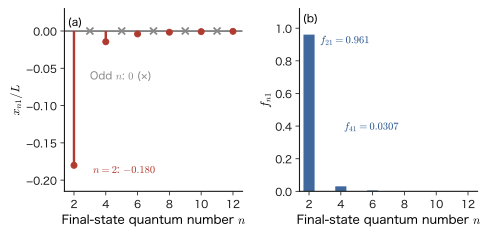
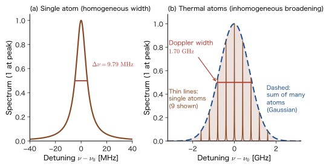

Chapter 52Absorption and Emission of Light — Electric Dipole Approximation, Selection Rules, Einstein Coefficients, Lifetimes, and Linewidths
The color of a fluorescent lamp or an LED, the red light emission of ruby, the yellow light of a sodium lamp—most of the “colors” we see are produced when electrons in atoms, molecules, and crystals absorb or emit light and move between levels (that is, make transitions). Which transitions occur, how fast do they occur, and how sharp is the color of the light that comes out? In this chapter we calculate these using quantum mechanics. The tools we use are the time-dependent perturbation theory and Fermi's golden rule that we obtained in the previous chapter. We regard light as an oscillating electric field applied to the atom from outside, and substitute the interaction between this field and the electron into the golden rule as the perturbation.
In classical physics (AD 03, Chapter 42, Section 42.4 (in Japanese)), light is a wave in which an electric field and a magnetic field oscillate as they propagate through space, and it shakes electric charges. An electron in an atom oscillates under that force and re-emits light of the same frequency. In quantum mechanics, the electron does not oscillate continuously but instead makes a transition between levels. There are three differences from the classical picture. (i) A transition occurs only when the energy difference between the levels, $\hbar\omega_{fi}$, matches the energy of the light, $\hbar\omega$ (the $\delta$ function in the golden rule). (ii) The strength of a transition is determined by the square of the absolute value of the matrix element $\mel{f}{\hat{\bm{d}}}{i}$ of the electric dipole $\hat{\bm{d}}=-e_0\hat{\bm{r}}$, so a transition for which this is $0$ does not occur. This is the selection rule. (iii) An excited state emits light and falls down spontaneously even when no light is shining on it (spontaneous emission). For this reason an excited state has a lifetime, and a spectral line acquires a width.
In this chapter we treat light as a classical wave (the semiclassical theory). This correctly gives the rates of the process in which light is absorbed and of the process in which light is emitted when induced by light (stimulated emission). Spontaneous emission does not come out of the classical electromagnetic field alone, but if we use the thermal-equilibrium argument that Einstein devised in 1917, even the rate of spontaneous emission is fixed by the absorption calculation. The method of quantizing light itself and deriving spontaneous emission directly is treated in Part X (Chapter 60), where we check that it agrees with the results of this chapter. The color and light emission of materials (complexes, phosphors, laser crystals, semiconductors) and how to read linewidths in spectroscopy all start from the ideas of this chapter.
- How, starting from the coupling of an electron to the electromagnetic field (minimal coupling) $\hat{H}=(\hat{\bm{p}}+e_0\bm{A})^2/2m_{\mathrm e}+V$ and passing through $\hat{H}_1=(e_0/m_{\mathrm e})\bm{A}\cdot\hat{\bm{p}}$, one obtains $\hat{H}_1=-\hat{\bm{d}}\cdot\bm{E}$ ($\hat{\bm{d}}=-e_0\hat{\bm{r}}$) under the electric dipole approximation $e^{i\bm{k}\cdot\bm{r}}\simeq1$; the relation between matrix elements $\bm{p}_{fi}=im_{\mathrm e}\omega_{fi}\bm{r}_{fi}$; and the range in which the approximation holds
- The transition rate for monochromatic light, $w=\dfrac{\pi}{2\hbar}E_0^2\abs{\hat{\bm{\epsilon}}\cdot\bm{d}_{fi}}^2\delta(E_f-E_i-\hbar\omega)$, and the absorption rate for isotropic broadband light, $w=B_{12}\,u(\omega)$, $B_{12}=\dfrac{\pi\abs{\bm{d}_{12}}^2}{3\varepsilon_0\hbar^2}$
- Being able to derive the selection rules for electric dipole transitions (parity, $\Delta l=\pm1$, $\Delta m=0,\pm1$, $\Delta S=0$) from the integrals of the matrix elements, and to calculate $\mel{1s}{z}{2p_0}=\dfrac{2^7\sqrt2}{3^5}a_0$ for hydrogen
- Deriving $g_1B_{12}=g_2B_{21}$ and $A_{21}=\dfrac{\hbar\omega^3}{\pi^2c^3}B_{21}$ from Einstein's thermal-equilibrium argument, and checking the spontaneous emission rate $A_{21}=\dfrac{\omega^3\abs{\bm{d}_{12}}^2}{3\pi\varepsilon_0\hbar c^3}$ against the $2p\to1s$ transition of hydrogen ($6.27\times10^{8}\ \mathrm{s^{-1}}$, $1.60\ \mathrm{ns}$)
- Being able to explain, from the ratio of spontaneous to stimulated emission, $A_{21}/(B_{21}u)=e^{\hbar\omega/k_{\mathrm B}T}-1$, why spontaneous emission dominates for visible light and stimulated emission dominates for microwaves
- The relation between the lifetime of an excited state, $\tau=1/A$, and the width of a Lorentzian spectral line, $\Delta E=\hbar A$ (the natural linewidth), and how it compares in size with the Doppler width, collisional broadening, and inhomogeneous broadening
Source notes: This chapter supplements material that is not in the original notes. Related notes: Yasuhide Mochizuki, “Physics Notes: Quantum Mechanics 3,” p. 2 (the Zeeman effect and spin).
52.1 An Electron in an Electromagnetic Field — Minimal Coupling and the Interaction Hamiltonian
When light strikes an atom, the electric and magnetic fields exert forces on the electrons in the atom. In this section we write down those forces as a term $\hat{H}_1(t)$ of the quantum-mechanical Hamiltonian. If only an electric field were applied statically, it would suffice to add the electrostatic potential energy $q\Phi$ as a potential energy. Light, however, is a wave in which the electric and magnetic fields propagate while changing with time, and the magnetic force $q\bm{v}\times\bm{B}$ depends on the velocity, so it cannot be expressed by a function $V(\bm{r})$ of position only. We therefore start from the Hamiltonian that uses the vector potential $\bm{A}$ and, in Section 52.2, return to the intuitive form $-\hat{\bm{d}}\cdot\bm{E}$, which uses only the electric field. We first confirm the Hamiltonian of a charged particle in an electromagnetic field in classical mechanics, and then carry over the case of the electron to quantum mechanics.
Caution: How symbols are used (bold $\bm{A}$ and $\bm{B}$, the Einstein coefficients, and other double uses)
Several quantities with similar names appear in this chapter. Bold $\bm{A}$ is the vector potential and bold $\bm{B}$ is the magnetic flux density; both are vectors. In contrast, $A_{21}$, $B_{12}$, and $B_{21}$ with subscripts are the Einstein coefficients of Section 52.5, and they are numbers (single values). When we write the magnitude of the magnetic flux density we use a non-bold $B$ (for example, $\mu_{\mathrm B}B$), but it can be distinguished from the Einstein coefficients by the presence or absence of subscripts. The energy density of light per unit volume and per unit angular frequency is written $u(\omega)$. The absorption coefficient $\alpha_{\mathrm{abs}}$ (Chapter 53) and the fine-structure constant $\alpha$ are not used in this chapter.
There are also other places where the same letter is used for a different quantity. To avoid confusion, we distinguish them as follows.
- $\hat{\bm{\epsilon}}$ (the polarization vector; the hat denotes a unit vector, not an operator), $\varepsilon_0$ (the vacuum permittivity), and $\varepsilon$ (the molar absorption coefficient, in units of $\mathrm{L\,mol^{-1}\,cm^{-1}}$) are different quantities.
- In contrast to the bold $\bm{E}$ (the electric field) and the amplitude $E_0$, symbols with a level number attached, such as $E_i$, $E_f$, $E_1$, and $E_2$, are the energies of levels.
- $\Phi$ is used only for the scalar potential of Section 52.1, and the quantum yield of light emission is written $\eta_{\mathrm{PL}}$ (Section 52.6).
- The eigenvalue of the parity is written $P=\pm1$, to distinguish it from the number $\pi$ and from the $\pi$ of $\pi$ polarization.
- The line-shape function is $\phi(\omega)$ (Section 52.3; the azimuthal angle is written $\varphi$), the Lorentzian line shape is $L(\omega)$ (Section 52.6), and the degeneracies of the levels are $g_1$ and $g_2$.
- The decay rate is $A$ (equal to the Einstein coefficient $A_{21}$), and the classical decay rate is written $A_{\mathrm{cl}}$. The $\Gamma$ of a group representation appears in this chapter only in the Application box of Section 52.4.1.
52.1.1 From classical mechanics — the canonical momentum is not mass × velocity
A particle of charge $q$ and mass $m$ moving with velocity $\bm{v}$ in an electric field $\bm{E}$ and a magnetic field $\bm{B}$ experiences the Lorentz force $\bm{F}=q(\bm{E}+\bm{v}\times\bm{B})$ (AD 03, Chapter 39, Section 39.4 (in Japanese)). Since quantum mechanics starts from the Hamiltonian, we must first know the Hamiltonian that gives this force. The electric and magnetic fields are expressed, using the scalar potential $\Phi$ (a symbol used only in this chapter; it has nothing to do with the Slater determinant) and the vector potential $\bm{A}$, as
\begin{equation} \bm{E}=-\nabla\Phi-\pdiff{\bm{A}}{t},\qquad \bm{B}=\nabla\times\bm{A} \label{eq:52-potentials} \end{equation}The Hamiltonian of a charged particle in an electromagnetic field then takes the following form, obtained by replacing the momentum $\bm{p}$ with $\bm{p}-q\bm{A}$ (this replacement is called minimal coupling).
Law 52.1: Hamiltonian of a charged particle in an electromagnetic field (minimal coupling)
\begin{equation} H=\frac{\left(\bm{p}-q\bm{A}(\bm{r},t)\right)^2}{2m}+q\Phi(\bm{r},t)+U(\bm{r}) \label{eq:52-Hclass} \end{equation}$\bm{p}$ is the canonical momentum, and $U(\bm{r})$ is the potential energy due to forces external to the electromagnetic field (such as the Coulomb force of the atomic nucleus).
Let us check with Hamilton's equations that this Hamiltonian really gives the Lorentz force.
Derivation: The Lorentz force follows from Eq. \eqref{eq:52-Hclass}
Denote the components by $i=x,y,z$ and write $\partial_i=\partial/\partial x_i$. For simplicity, let $U=0$. From Hamilton's equation $\dot{x}_i=\partial H/\partial p_i$ we obtain
$$ \dot{x}_i=\frac{p_i-qA_i}{m}\qquad\text{that is}\qquad mv_i=p_i-qA_i $$Next we compute $\dot{p}_i=-\partial H/\partial x_i$. When $H$ is differentiated with respect to $x_i$, only the $A_j$ inside $(\bm{p}-q\bm{A})^2$ depend on $x_i$, so
$$ \dot{p}_i=\frac{q}{m}\sum_j(p_j-qA_j)\,\partial_iA_j-q\,\partial_i\Phi=q\sum_jv_j\,\partial_iA_j-q\,\partial_i\Phi $$(we used $p_j-qA_j=mv_j$). On the other hand, when we differentiate $mv_i=p_i-qA_i$ with respect to time, $A_i$ depends on time through the particle's position $\bm{x}(t)$ and the time $t$, so using $\dfrac{\dd A_i}{\dd t}=\pdiff{A_i}{t}+\sum_jv_j\,\partial_jA_i$ we obtain
$$ m\dot{v}_i=\dot{p}_i-q\frac{\dd A_i}{\dd t} =q\left(-\partial_i\Phi-\pdiff{A_i}{t}\right)+q\sum_jv_j\left(\partial_iA_j-\partial_jA_i\right) $$The first term on the right-hand side is $qE_i$ by Eq. \eqref{eq:52-potentials}. The second term, $\sum_jv_j(\partial_iA_j-\partial_jA_i)$, equals the $i$th component of $\bm{v}\times(\nabla\times\bm{A})$ (for example, for $i=x$ it is $v_y(\partial_xA_y-\partial_yA_x)+v_z(\partial_xA_z-\partial_zA_x)=v_y(\nabla\times\bm{A})_z-v_z(\nabla\times\bm{A})_y=(\bm{v}\times\bm{B})_x$). Hence $m\dot{\bm{v}}=q(\bm{E}+\bm{v}\times\bm{B})$, and the Lorentz force has been obtained.
∎
Caution: $\bm{p}$ is not “mass × velocity”
As we saw in the course of the derivation, when an electromagnetic field is present, what is proportional to the velocity is $\bm{p}-q\bm{A}$ ($m\bm{v}=\bm{p}-q\bm{A}$), not $\bm{p}$ itself. $\bm{p}$ is called the canonical momentum. In quantum mechanics, it is the canonical momentum that is replaced by $\hat{\bm{p}}=-i\hbar\nabla$. Even if we add a quantity of the form $\nabla\chi$ to the potential $\bm{A}$ (a gauge transformation), it gives the same $\bm{E}$ and $\bm{B}$, so $\bm{p}$ itself is not an observable; what can be observed is $\bm{p}-q\bm{A}$.
52.1.2 Coupling of the electron to the electromagnetic field — $\hat{H}_1=(e_0/m_{\mathrm e})\bm{A}\cdot\hat{\bm{p}}$
The charge of the electron is $q=-e_0$ and its mass is $m_{\mathrm e}$. Replacing $\bm{p}$ in Eq. \eqref{eq:52-Hclass} by the operator $\hat{\bm{p}}=-i\hbar\nabla$ and taking the light (the radiation field) to contain no scalar potential ($\Phi=0$), we can write the Hamiltonian of an electron in an atom as
\begin{equation} \hat{H}=\frac{\left(\hat{\bm{p}}+e_0\bm{A}(\bm{r},t)\right)^2}{2m_{\mathrm e}}+V(\bm{r}) \label{eq:52-Hfull} \end{equation}Here $V(\bm{r})$ is the potential energy due to the atomic nucleus (and the other electrons). Let us expand the square. Since $\hat{\bm{p}}$ and $\bm{A}(\bm{r},t)$ do not commute, we expand while preserving the order:
\begin{equation} \hat{H}=\frac{\hat{\bm{p}}^2}{2m_{\mathrm e}}+V+\frac{e_0}{2m_{\mathrm e}}\left(\hat{\bm{p}}\cdot\bm{A}+\bm{A}\cdot\hat{\bm{p}}\right)+\frac{e_0^2}{2m_{\mathrm e}}\bm{A}^2 \label{eq:52-Hexpand} \end{equation}We examine the $\hat{\bm{p}}\cdot\bm{A}$ in the third term by letting it act on an arbitrary wave function $\psi$. Using the product rule, we have
$$ \hat{\bm{p}}\cdot(\bm{A}\psi)=-i\hbar\nabla\cdot(\bm{A}\psi)=-i\hbar(\nabla\cdot\bm{A})\,\psi+\bm{A}\cdot(-i\hbar\nabla\psi)=-i\hbar(\nabla\cdot\bm{A})\,\psi+\bm{A}\cdot\hat{\bm{p}}\psi $$For a light wave we can choose $\nabla\cdot\bm{A}=0$ (the Coulomb gauge). For example, for a plane wave $\bm{A}\propto\hat{\bm{\epsilon}}\sin(\bm{k}\cdot\bm{r}-\omega t)$ we have $\nabla\cdot\bm{A}\propto\bm{k}\cdot\hat{\bm{\epsilon}}\cos(\bm{k}\cdot\bm{r}-\omega t)$, so if $\bm{k}\cdot\hat{\bm{\epsilon}}=0$, that is, if $\bm{A}$ is perpendicular to the direction of propagation (a transverse wave), then $\nabla\cdot\bm{A}=0$ ($\hat{\bm{\epsilon}}$ is the unit vector giving the direction of $\bm{A}$ and is called the polarization vector. In this chapter we also put a hat on the polarization vector, but this indicates a unit vector, not an operator. It is a different letter from the vacuum permittivity $\varepsilon_0$). In this case $\hat{\bm{p}}\cdot\bm{A}=\bm{A}\cdot\hat{\bm{p}}$, and the third term of Eq. \eqref{eq:52-Hexpand} combines into $\dfrac{e_0}{m_{\mathrm e}}\bm{A}\cdot\hat{\bm{p}}$.
Formula 52.1: Interaction of light with an electron (velocity gauge)
Light gives the following perturbation to the atomic Hamiltonian $\hat{H}_0=\dfrac{\hat{\bm{p}}^2}{2m_{\mathrm e}}+V(\bm{r})$.
\begin{equation} \hat{H}_1(t)=\frac{e_0}{m_{\mathrm e}}\,\bm{A}(\bm{r},t)\cdot\hat{\bm{p}} \label{eq:52-H1vel} \end{equation}The total is $\hat{H}=\hat{H}_0+\hat{H}_1(t)+\dfrac{e_0^2}{2m_{\mathrm e}}\bm{A}^2$, and the last term, in $\bm{A}^2$, is second order in the light field and does not contribute to the absorption or emission of a single photon.
Let us explain why the last term $\dfrac{e_0^2}{2m_{\mathrm e}}\bm{A}^2$ may be dropped. This term is the square of $\bm{A}$ (a quantity proportional to the intensity of light) and is smaller than $\hat{H}_1$ by a factor of order $e_0A_0/\abs{\hat{\bm{p}}}$ (that this ratio is small is checked in Example 52.1). Moreover, in the electric dipole approximation of the next section, Section 52.2, $\bm{A}$ becomes independent of position, so $\bm{A}^2$ is a c-number (a number, not an operator) that contains no electron coordinate; it merely adds the same amount to every level and does not cause transitions between levels. There is also another term, the coupling $-\hat{\bm{\mu}}\cdot\bm{B}$ between the magnetic moment of the electron spin, $\hat{\bm{\mu}}=-g_{\mathrm e}\mu_{\mathrm B}\hat{\bm{S}}/\hbar$, and the magnetic flux density of the light, $\bm{B}=\nabla\times\bm{A}$, but this is smaller than the coupling through the electric field by a factor of about $\hbar k/(2\abs{\hat{\bm{p}}})\sim ka_0/2$ ($\bm{k}$ is the wavevector of the light; see Section 52.2.1). This term causes magnetic dipole transitions, and it is derived in Chapter 63 (The Nonrelativistic Limit of the Dirac Equation).
52.1.3 A plane wave of light — magnitude of the electric field and intensity of light
Let us take the light striking the atom to be a linearly polarized plane wave of angular frequency $\omega$ and wavevector $\bm{k}$ ($\abs{\bm{k}}=k=\omega/c=2\pi/\lambda$). We take the vector potential to be
\begin{equation} \bm{A}(\bm{r},t)=A_0\,\hat{\bm{\epsilon}}\,\sin(\bm{k}\cdot\bm{r}-\omega t),\qquad \bm{k}\cdot\hat{\bm{\epsilon}}=0 \label{eq:52-A} \end{equation}Here $\hat{\bm{\epsilon}}$ is a real unit vector (linear polarization). Circular polarization is treated in Section 52.4. From Eq. \eqref{eq:52-potentials} (with $\Phi=0$), the electric field and the magnetic flux density are
\begin{equation} \bm{E}=-\pdiff{\bm{A}}{t}=E_0\,\hat{\bm{\epsilon}}\cos(\bm{k}\cdot\bm{r}-\omega t),\qquad \bm{B}=\nabla\times\bm{A}=\frac{E_0}{c}\,(\bm{e}_k\times\hat{\bm{\epsilon}})\cos(\bm{k}\cdot\bm{r}-\omega t) \label{eq:52-EB} \end{equation}Here $\bm{e}_k=\bm{k}/k$ is the unit vector in the direction of propagation, the amplitude $E_0$ of the electric field is $E_0=\omega A_0$, and the amplitude of the magnetic flux density is $E_0/c$ ($\bm{E}\perp\bm{B}\perp\bm{k}$, $E=cB$; AD 03, Section 42.4 (in Japanese)). The energy density of this wave, to which the electric and magnetic fields contribute equally, is, as a time average,
\begin{equation} u_{\mathrm{tot}}=\frac{1}{2}\varepsilon_0E_0^2,\qquad \text{intensity}\quad I=c\,u_{\mathrm{tot}}=\frac{1}{2}c\,\varepsilon_0E_0^2 \label{eq:52-I} \end{equation}(this is the sum of the time average $\tfrac14\varepsilon_0E_0^2$ of the energy density of the electric field and that of the magnetic field; AD 03, Section 42.5 (in Japanese)). From the intensity $I$ measured in $\mathrm{W/m^2}$, the amplitude of the electric field is found to be $E_0=\sqrt{2I/(c\varepsilon_0)}$.
Example 52.1: Intensity of light and amplitude of the electric field, and whether the light can be treated as a perturbation
(1) Find the amplitude $E_0$ of the electric field for sunlight (intensity $I=1\ \mathrm{kW/m^2}$) and for a pulsed laser ($I=1\ \mathrm{GW/cm^2}$). (2) Compare these with the electric field $E_{\mathrm{at}}=\dfrac{e_0}{4\pi\varepsilon_0a_0^2}$ that the electron in a hydrogen atom experiences from the atomic nucleus. (3) For a wavelength of $500\ \mathrm{nm}$, find the ratio of $e_0A_0$ to $\hbar/a_0$, the rough scale of the momentum of an electron in an atom.
Solution. (1) By Eq. \eqref{eq:52-I}, $E_0=\sqrt{2I/(c\varepsilon_0)}$. We have $c\varepsilon_0=2.998\times10^{8}\times8.854\times10^{-12}=2.654\times10^{-3}\ \mathrm{A/V}$. For sunlight, $I=10^3\ \mathrm{W/m^2}$, so $E_0=\sqrt{2\times10^3/(2.654\times10^{-3})}=\sqrt{7.54\times10^{5}}=868\ \mathrm{V/m}$. For the laser, $I=10^9\ \mathrm{W}/10^{-4}\ \mathrm{m^2}=10^{13}\ \mathrm{W/m^2}$, so $E_0=\sqrt{2\times10^{13}/(2.654\times10^{-3})}=8.68\times10^{7}\ \mathrm{V/m}$. The amplitude $E_0/c$ of the magnetic flux density is $2.9\ \mathrm{\mu T}$ for sunlight and $0.29\ \mathrm{T}$ for the laser.
(2) $E_{\mathrm{at}}=\dfrac{1.602\times10^{-19}}{4\pi\times8.854\times10^{-12}\times(5.292\times10^{-11})^2}=5.14\times10^{11}\ \mathrm{V/m}$. The ratio is $868/(5.14\times10^{11})=1.7\times10^{-9}$ for sunlight and $8.68\times10^{7}/(5.14\times10^{11})=1.7\times10^{-4}$ for the laser. In both cases the electric field of the light is far weaker than the electric field inside the atom, so the light can be treated as a perturbation.
(3) $\omega=2\pi c/\lambda=3.77\times10^{15}\ \mathrm{s^{-1}}$ ($\hbar\omega=2.48\ \mathrm{eV}$). For sunlight, $A_0=E_0/\omega=868/(3.77\times10^{15})=2.30\times10^{-13}\ \mathrm{V\,s/m}$. The unit of $e_0A_0$ is $\mathrm{C}\cdot\mathrm{V\,s/m}=\mathrm{J\,s/m}$, which is a unit of momentum. Since $\hbar/a_0=1.0546\times10^{-34}/(5.292\times10^{-11})=1.993\times10^{-24}\ \mathrm{kg\,m/s}$, we have $\dfrac{e_0A_0}{\hbar/a_0}=\dfrac{1.602\times10^{-19}\times2.30\times10^{-13}}{1.993\times10^{-24}}=1.85\times10^{-8}$. For the laser, $A_0$ is $10^{5}$ times larger (the ratio of the $E_0$ values is $\sqrt{10^{10}}=10^5$), so the ratio is $1.85\times10^{-3}$. This ratio equals $\dfrac{e_0E_0a_0}{\hbar\omega}$ (the ratio of the work done by the electric field over the size of the atom to the photon energy), and in both cases it is far smaller than $1$. Therefore the $\bm{A}^2$ term is smaller than the $\bm{A}\cdot\hat{\bm{p}}$ term and may be dropped. (For still stronger light, for example a laser for which the ratio is close to $1$, this perturbation theory does not hold.)
Discussion: Is it legitimate to treat light as a classical wave?
Light is fundamentally a collection of photons (Chapters 3 and 4), and the electromagnetic field itself is also quantized (Chapter 60). Even so, it is when we find the rates of absorption and stimulated emission that we may treat light as a classical wave in this chapter. These rates are proportional to the intensity of the light (the number of photons $n$ in that mode), and the larger $n$ is, the better the classical-wave approximation becomes. On the other hand, the rate of spontaneous emission, which occurs even when there is not a single photon ($n=0$), does not come out of a calculation with a classical field. In the quantized field, the emission rate is proportional to $n+1$, where $n$ corresponds to stimulated emission and $1$ to spontaneous emission (Chapter 60). In this chapter, we determine this “$+1$” indirectly in Section 52.5 from Einstein's argument based on thermal equilibrium.
52.2 The Electric Dipole Approximation — From the Velocity Gauge to the Length Gauge
Eq. \eqref{eq:52-H1vel} can be used for calculations as it stands. However, by using the fact that the wavelength of light is much longer than the size of an atom, we can rewrite it in a more transparent form. The result is what is known in classical electromagnetism as “the energy $-\bm{d}\cdot\bm{E}$ of an electric dipole in an electric field.” In this section we carry out the rewriting in two ways.
52.2.1 The phase factor $e^{i\bm{k}\cdot\bm{r}}$ can be set to $1$ — the electric dipole approximation
The vector potential of Eq. \eqref{eq:52-A} depends on the electron's position $\bm{r}$ (with the atomic nucleus taken as the origin). Using Euler's formula, we write
$$ \bm{A}(\bm{r},t)=\frac{A_0}{2i}\,\hat{\bm{\epsilon}}\left[e^{i(\bm{k}\cdot\bm{r}-\omega t)}-e^{-i(\bm{k}\cdot\bm{r}-\omega t)}\right] $$and expanding the phase factor gives
\begin{equation} e^{\pm i\bm{k}\cdot\bm{r}}=1\pm i\,\bm{k}\cdot\bm{r}-\tfrac12(\bm{k}\cdot\bm{r})^2\mp\cdots \label{eq:52-expk} \end{equation}The region in which the electron moves is of the order of the size of an atom, $a\sim a_0$ ($\sim0.05\ \mathrm{nm}$), and the wavelength of visible light is $\lambda\sim500\ \mathrm{nm}$, so the quantity that determines the size of the expansion, $\abs{\bm{k}\cdot\bm{r}}\lesssim ka_0=2\pi a_0/\lambda\sim7\times10^{-4}$, is far smaller than $1$ (Figure 52.1). We therefore make the approximation of keeping only the first term of the expansion.
Definition 52.1: Electric dipole approximation
Because the wavelength of light is far longer than the size of an atom ($\abs{\bm{k}\cdot\bm{r}}\ll1$), the field of the light can be regarded as a uniform field, independent of position, over the region where the electron is. That is, the approximation of setting $e^{\pm i\bm{k}\cdot\bm{r}}\simeq1$ in Eq. \eqref{eq:52-expk} is called the electric dipole approximation. Then Eq. \eqref{eq:52-A} becomes $\bm{A}(t)=-A_0\hat{\bm{\epsilon}}\sin\omega t$, and the electric field at the position of the atom is $\bm{E}(t)=E_0\hat{\bm{\epsilon}}\cos\omega t$.
In the electric dipole approximation, Eq. \eqref{eq:52-H1vel} becomes
\begin{equation} \hat{H}_1(t)=-\frac{e_0A_0}{m_{\mathrm e}}\sin\omega t\;\hat{\bm{\epsilon}}\cdot\hat{\bm{p}} =\hat{V}e^{-i\omega t}+\hat{V}^\dagger e^{i\omega t},\qquad \hat{V}=-i\,\frac{e_0A_0}{2m_{\mathrm e}}\,\hat{\bm{\epsilon}}\cdot\hat{\bm{p}} \label{eq:52-H1V} \end{equation}(We used $-\sin\omega t=(e^{-i\omega t}-e^{i\omega t})/2i$. Since $\hat{\bm{\epsilon}}\cdot\hat{\bm{p}}$ is Hermitian, the coefficient of $e^{i\omega t}$ is the Hermitian conjugate of $\hat{V}$, namely $\hat{V}^\dagger=+i\frac{e_0A_0}{2m_{\mathrm e}}\hat{\bm{\epsilon}}\cdot\hat{\bm{p}}$.) This has the same form as the perturbation $\hat{H}_1=\hat{V}e^{-i\omega t}+\hat{V}^\dagger e^{i\omega t}$ of Fermi's golden rule in the previous chapter (here $\hat{V}$ and the matrix element $V_{fi}$ are the coefficient of $e^{-i\omega t}$ in the perturbation due to light, and are different from the potential energy $V(\bm{r})$ of the atom).
Example 52.2: The range of validity of the electric dipole approximation
Take the size of an atom (the spread of the electron) to be $a_0=0.0529\ \mathrm{nm}$. For each of the following kinds of light, find $a_0/\lambda$ and $ka_0=2\pi a_0/\lambda$, and judge whether the electric dipole approximation is good. (1) Visible light, $\lambda=500\ \mathrm{nm}$. (2) The Lyman $\alpha$ line of hydrogen, $\lambda=121.6\ \mathrm{nm}$. (3) X-rays, $\lambda=0.1\ \mathrm{nm}$. (4) The microwave of the inversion transition of the NH$_3$ molecule, $\nu=23.7\ \mathrm{GHz}$ (take the size of the molecule to be $0.1\ \mathrm{nm}$).
Solution. (1) $a_0/\lambda=0.0529/500=1.06\times10^{-4}$, $ka_0=2\pi\times1.06\times10^{-4}=6.6\times10^{-4}$. This is $\ll1$, so the approximation is good. (2) $a_0/\lambda=0.0529/121.6=4.35\times10^{-4}$, $ka_0=2.7\times10^{-3}$. Again the approximation is good. (3) $a_0/\lambda=0.0529/0.1=0.53$, $ka_0=2\pi\times0.53=3.3$. Since this is close to $1$ or larger, the electric dipole approximation breaks down for outer electrons (the higher-order terms become of the same order). However, the inner-shell electrons that are actually involved in X-ray absorption have orbitals that shrink in inverse proportion to the atomic number $Z$ (the radius is of order $a_0/Z$); for example, in the K shell of Cu ($Z=29$), $r\sim0.0018\ \mathrm{nm}$, and for the K absorption edge wavelength of $0.138\ \mathrm{nm}$, $kr=2\pi\times0.0018/0.138\approx0.08$ is small. The absorption by inner-shell electrons can be explained almost entirely by the electric dipole approximation. (4) The wavelength of the microwave is $\lambda=c/\nu=2.998\times10^{8}/(2.37\times10^{10})=12.6\ \mathrm{mm}$, and the ratio of the size of the molecule to $\lambda$ is $0.1\ \mathrm{nm}/12.6\ \mathrm{mm}=7.9\times10^{-9}$, so $kr=5\times10^{-8}$. The electric dipole approximation is extremely good.
52.2.2 Higher-order terms — magnetic dipole and electric quadrupole
If we keep the expansion of Eq. \eqref{eq:52-expk} through the second term $i\bm{k}\cdot\bm{r}$, a term of the form $(\hat{\bm{\epsilon}}\cdot\hat{\bm{p}})(\bm{k}\cdot\bm{r})$ appears in $\hat{H}_1$. This can be divided into a symmetric part and an antisymmetric part. The symmetric part $\tfrac12[(\hat{\bm{\epsilon}}\cdot\hat{\bm{p}})(\bm{k}\cdot\bm{r})+(\bm{k}\cdot\hat{\bm{p}})(\hat{\bm{\epsilon}}\cdot\bm{r})]$ gives electric quadrupole (E2) transitions. By the vector identity $(\bm{r}\times\hat{\bm{p}})\cdot(\bm{k}\times\hat{\bm{\epsilon}})=(\bm{r}\cdot\bm{k})(\hat{\bm{p}}\cdot\hat{\bm{\epsilon}})-(\bm{r}\cdot\hat{\bm{\epsilon}})(\hat{\bm{p}}\cdot\bm{k})$, the antisymmetric part becomes the inner product of the orbital angular momentum $\hat{\bm{L}}=\bm{r}\times\hat{\bm{p}}$ and the direction of the magnetic flux density, $\bm{k}\times\hat{\bm{\epsilon}}\propto\bm{B}$, that is, $\propto\bm{B}\cdot\hat{\bm{L}}$, and gives magnetic dipole (M1) transitions (the spin term $-\hat{\bm{\mu}}\cdot\bm{B}$ also falls under the same M1). Table 52.1 compares the magnitudes of these with that of the electric dipole (E1).
| Type | Interaction | Amplitude ratio (E1 taken as 1) | Transition rate ratio | Examples |
|---|---|---|---|---|
| Electric dipole E1 | $-\hat{\bm{d}}\cdot\bm{E}$ | $1$ | $1$ (for allowed transitions, $A\sim10^{7}$–$10^{8}\ \mathrm{s^{-1}}$) | Hydrogen 2p→1s, Na D line |
| Magnetic dipole M1 | $-\hat{\bm{\mu}}\cdot\bm{B}$ | $\dfrac{\mu_{\mathrm B}/c}{e_0a_0}=\dfrac{\hbar}{2m_{\mathrm e}ca_0}=3.6\times10^{-3}$ | $1.3\times10^{-5}$ | ${}^5D_0\to{}^7F_1$ of Eu$^{3+}$ (on the order of $A\sim10\ \mathrm{s^{-1}}$) |
| Electric quadrupole E2 | $\hat{Q}_{ij}\,\partial_iE_j$ | $\sim ka$ (about $10^{-3}$ for visible light) | $\sim(ka)^2$ ($10^{-7}$–$10^{-5}$) | Pre-edge of the K absorption edge of transition metals ($1s\to3d$) |
The ratio of the M1 amplitude can be estimated as follows. Since the magnetic flux density is $B=E/c$, relative to the E1 interaction $e_0E\,a_0$ the M1 interaction is $\mu_{\mathrm B}B=\mu_{\mathrm B}E/c$, and the ratio is $\dfrac{\mu_{\mathrm B}}{c\,e_0a_0}=\dfrac{e_0\hbar/2m_{\mathrm e}}{c\,e_0a_0}=\dfrac{\hbar}{2m_{\mathrm e}ca_0}=3.6\times10^{-3}$ (this equals half the fine-structure constant, $1/274$; Chapter 26), and the ratio of the transition rates (the square of the amplitude) is $1.3\times10^{-5}$. Only when E1 is forbidden (Section 52.4) can these higher-order transitions be seen. For example, in a phosphor containing $\mathrm{Eu^{3+}}$, the orange emission ${}^5D_0\to{}^7F_1$ (wavelength about $590\ \mathrm{nm}$) is the main emission line when Eu occupies a site that has an inversion center, and it is a magnetic dipole transition.
52.2.3 From the velocity form to the length form — $\bm{p}_{fi}=im_{\mathrm e}\omega_{fi}\bm{r}_{fi}$
The matrix element of $\hat{V}$ in Eq. \eqref{eq:52-H1V} contains the matrix element of the momentum, $\bm{p}_{fi}=\mel{f}{\hat{\bm{p}}}{i}$. This is related, through the energy difference, to the matrix element of the position, $\bm{r}_{fi}=\mel{f}{\hat{\bm{r}}}{i}$.
Derivation: Relation between the matrix elements of momentum and position
We find the commutator of the atomic Hamiltonian $\hat{H}_0=\hat{\bm{p}}^2/2m_{\mathrm e}+V(\bm{r})$ with the position $\hat{\bm{r}}$. Since $V$ is a function of position only, it commutes with $\hat{\bm{r}}$. From $[\hat{x},\hat{p}_x]=i\hbar$ we have $[\hat{x},\hat{p}_x^2]=\hat{p}_x[\hat{x},\hat{p}_x]+[\hat{x},\hat{p}_x]\hat{p}_x=2i\hbar\hat{p}_x$, so
$$ \comm{\hat{\bm{r}}}{\hat{H}_0}=\frac{1}{2m_{\mathrm e}}\comm{\hat{\bm{r}}}{\hat{\bm{p}}^2}=\frac{i\hbar}{m_{\mathrm e}}\hat{\bm{p}} $$holds. Sandwiching this between the eigenstates $\ket{i}$ and $\ket{f}$ of $\hat{H}_0$ ($\hat{H}_0\ket{i}=E_i\ket{i}$, $\hat{H}_0\ket{f}=E_f\ket{f}$), we find that the left-hand side becomes
$$ \mel{f}{\hat{\bm{r}}\hat{H}_0-\hat{H}_0\hat{\bm{r}}}{i}=(E_i-E_f)\,\bm{r}_{fi}=-\hbar\omega_{fi}\,\bm{r}_{fi}\qquad(\hbar\omega_{fi}=E_f-E_i) $$The right-hand side is $\dfrac{i\hbar}{m_{\mathrm e}}\bm{p}_{fi}$, so $\dfrac{i\hbar}{m_{\mathrm e}}\bm{p}_{fi}=-\hbar\omega_{fi}\bm{r}_{fi}$. Multiplying both sides by $m_{\mathrm e}/(i\hbar)$ and using $-1/i=i$, we find that
\begin{equation} \bm{p}_{fi}=i\,m_{\mathrm e}\,\omega_{fi}\,\bm{r}_{fi} \label{eq:52-pr} \end{equation}holds.
∎
Eq. \eqref{eq:52-pr} corresponds to the fact that, in classical mechanics, for $\bm{p}=m\dot{\bm{r}}$ the time derivative of $\bm{r}$ oscillating at angular frequency $\omega_{fi}$ is $\pm i\omega_{fi}\bm{r}$ (in the Heisenberg picture, $\hat{\bm{p}}=(i m_{\mathrm e}/\hbar)\comm{\hat{H}_0}{\hat{\bm{r}}}$; Chapter 50). Substituting this into the matrix element of $\hat{V}$ in Eq. \eqref{eq:52-H1V}, we obtain
\begin{equation} V_{fi}=-i\frac{e_0A_0}{2m_{\mathrm e}}\,\hat{\bm{\epsilon}}\cdot\bm{p}_{fi}=-i\frac{e_0A_0}{2m_{\mathrm e}}\cdot i\,m_{\mathrm e}\omega_{fi}\,\hat{\bm{\epsilon}}\cdot\bm{r}_{fi}=\frac{e_0A_0\,\omega_{fi}}{2}\,\hat{\bm{\epsilon}}\cdot\bm{r}_{fi} \label{eq:52-Vfi} \end{equation}In Fermi's golden rule, $\delta(E_f-E_i-\hbar\omega)$ forces $\omega=\omega_{fi}$, so using $A_0\omega_{fi}=A_0\omega=E_0$ we obtain
$$ V_{fi}=\frac{e_0E_0}{2}\,\hat{\bm{\epsilon}}\cdot\bm{r}_{fi}=-\frac{E_0}{2}\,\hat{\bm{\epsilon}}\cdot\bm{d}_{fi}\qquad\bigl(\bm{d}_{fi}=\mel{f}{\hat{\bm{d}}}{i},\ \hat{\bm{d}}=-e_0\hat{\bm{r}}\bigr) $$This agrees, in both magnitude and phase, with the result for the following interaction
\begin{equation} \hat{H}_1(t)=-\hat{\bm{d}}\cdot\bm{E}(t),\qquad \hat{\bm{d}}=-e_0\hat{\bm{r}},\qquad \bm{E}(t)=E_0\hat{\bm{\epsilon}}\cos\omega t \label{eq:52-dE} \end{equation}whose matrix element $\mel{f}{-\hat{\bm{d}}\cdot\bm{E}}{i}$ has the coefficient $-\tfrac{E_0}{2}\hat{\bm{\epsilon}}\cdot\bm{d}_{fi}$ for $e^{-i\omega t}$.
Eq. \eqref{eq:52-dE} is precisely the energy $-\bm{d}\cdot\bm{E}$ that, in classical electromagnetism, a pair of charges with electric dipole moment $\bm{d}$ has in a uniform electric field $\bm{E}$ (AD 03, Chapter 41 (in Japanese)). Since the electron's charge is $-e_0$, we have $\hat{\bm{d}}=-e_0\hat{\bm{r}}$, and $-\hat{\bm{d}}\cdot\bm{E}=e_0\hat{\bm{r}}\cdot\bm{E}$. All the calculations in the rest of this chapter start from this form $-\hat{\bm{d}}\cdot\bm{E}$.
Caution: Sign of the coupling to the external field
In this textbook, the coupling to an external field is written in its physical form $-\hat{\bm{d}}\cdot\bm{E}$ (for an electron, $\hat{\bm{d}}=-e_0\hat{\bm{r}}$), and for a magnetic field as $-\hat{\bm{\mu}}\cdot\bm{B}$. The Fetter–Walecka-style notation of the companion volume “Linear Response Theory” (AD 08) writes the external field in the form $+f\hat{B}$, so the sign is opposite. This difference is sorted out in the box in Chapter 54, which introduces linear response (Section 54.2).
52.2.4 Derivation by gauge transformation — the velocity gauge and the length gauge are the same physics
Eq. \eqref{eq:52-Vfi} showed that at resonance $\omega=\omega_{fi}$ the two forms $\bm{A}\cdot\hat{\bm{p}}$ (the velocity gauge) and $-\hat{\bm{d}}\cdot\bm{E}$ (the length gauge) agree. In fact, in the electric dipole approximation the two Hamiltonians are connected, even off resonance, merely by a transformation that multiplies the wave function by a position-dependent phase (a unitary transformation).
Derivation: The gauge transformation produces $-\hat{\bm{d}}\cdot\bm{E}$ (the Göppert-Mayer transformation)
In the electric dipole approximation, $\bm{A}=\bm{A}(t)$ is independent of position. With this $\bm{A}(t)$, consider the time-dependent Schrödinger equation $$ i\hbar\pdiff{\psi}{t}=\left[\frac{(\hat{\bm{p}}+e_0\bm{A}(t))^2}{2m_{\mathrm e}}+V(\bm{r})\right]\psi $$ (this equation also contains the $\bm{A}^2$ term). Using a position-dependent phase factor, we rewrite the wave function as $\psi=e^{-ie_0\bm{A}(t)\cdot\bm{r}/\hbar}\,\psi'$. First, apply $\hat{\bm{p}}=-i\hbar\nabla$ to the product of the phase factor and $\psi'$. By the product rule, the gradient of the phase factor, $\nabla(-e_0\bm{A}\cdot\bm{r}/\hbar)=-e_0\bm{A}/\hbar$, gives $-e_0\bm{A}$, so that
$$ (\hat{\bm{p}}+e_0\bm{A})\,\psi=e^{-ie_0\bm{A}\cdot\bm{r}/\hbar}\,(\hat{\bm{p}}-e_0\bm{A}+e_0\bm{A})\,\psi'=e^{-ie_0\bm{A}\cdot\bm{r}/\hbar}\,\hat{\bm{p}}\,\psi' $$Applying the operator twice gives the same result, so $(\hat{\bm{p}}+e_0\bm{A})^2\psi=e^{-ie_0\bm{A}\cdot\bm{r}/\hbar}\hat{\bm{p}}^2\psi'$. In the time derivative on the left-hand side, the phase factor also depends on time, so
$$ i\hbar\pdiff{\psi}{t}=e^{-ie_0\bm{A}\cdot\bm{r}/\hbar}\left[i\hbar\pdiff{\psi'}{t}+e_0\,\bm{r}\cdot\pdiff{\bm{A}}{t}\,\psi'\right] $$is obtained. When the common phase factor is removed from both sides, the equation for $\psi'$ becomes
$$ i\hbar\pdiff{\psi'}{t}=\left[\frac{\hat{\bm{p}}^2}{2m_{\mathrm e}}+V(\bm{r})-e_0\,\bm{r}\cdot\pdiff{\bm{A}}{t}\right]\psi'=\left[\hat{H}_0+e_0\,\bm{r}\cdot\bm{E}(t)\right]\psi'=\left[\hat{H}_0-\hat{\bm{d}}\cdot\bm{E}(t)\right]\psi' $$(we used $\bm{E}=-\partial\bm{A}/\partial t$ and $\hat{\bm{d}}=-e_0\hat{\bm{r}}$). The $\bm{A}^2$ term has disappeared completely under this transformation.
∎
The phase factor $e^{-ie_0\bm{A}(t)\cdot\bm{r}/\hbar}$ of the transformation depends only on position, so it does not change the probability density of the electron's position. Before the light arrives and after it has gone, $\bm{A}=0$ and $\psi=\psi'$, so the transition probability is the same in the velocity gauge and the length gauge. The length-gauge form $-\hat{\bm{d}}\cdot\bm{E}$ makes the physical meaning easy to see, because $\bm{E}$ appears directly. On the other hand, the velocity gauge of Eq. \eqref{eq:52-H1vel} is used in band-structure calculations of solids (where the momentum matrix elements are easy to compute).
Caution: Condition for the length and velocity forms to agree
In deriving Eq. \eqref{eq:52-pr}, we used the fact that $V$ is a function of position only, so that $\comm{\hat{\bm{r}}}{V}=0$. When the eigenstates are known exactly, the two forms agree, but when approximate states are used they may fail to agree (the degree of agreement serves as a measure of how good the approximation is). Moreover, for a nonlocal potential (a pseudopotential, commonly used in first-principles calculations) $\comm{\hat{\bm{r}}}{\hat{V}}\neq0$, and a correction term appears in Eq. \eqref{eq:52-pr}, which therefore does not hold as it stands.
Example 52.3: Checking $\bm{p}_{fi}=im_{\mathrm e}\omega_{fi}\bm{r}_{fi}$ for a particle in a box
For a one-dimensional infinite well of width $L$ (walls at $x=0$ and $x=L$, $\psi_n=\sqrt{2/L}\sin(n\pi x/L)$, $E_n=n^2\pi^2\hbar^2/2mL^2$), find $x_{21}=\mel{2}{\hat{x}}{1}$, $\omega_{21}$, and $p_{21}=\mel{2}{\hat{p}}{1}$ for the transition $n=1\to2$, and verify that Eq. \eqref{eq:52-pr} holds.
Solution. Let $u=\pi x/L$. By the product-to-sum formula $\sin2u\,\sin u=\tfrac12(\cos u-\cos3u)$, we have
$$ x_{21}=\frac{2}{L}\int_0^Lx\sin\frac{2\pi x}{L}\sin\frac{\pi x}{L}\dd x=\frac{1}{L}\int_0^Lx\left[\cos\frac{\pi x}{L}-\cos\frac{3\pi x}{L}\right]\dd x $$Integration by parts gives $\displaystyle\int_0^Lx\cos\frac{q\pi x}{L}\dd x=\left[\frac{Lx}{q\pi}\sin\frac{q\pi x}{L}\right]_0^L-\frac{L}{q\pi}\int_0^L\sin\frac{q\pi x}{L}\dd x=\frac{L^2}{q^2\pi^2}\left[\cos\frac{q\pi x}{L}\right]_0^L=\frac{L^2}{q^2\pi^2}\left((-1)^q-1\right)$ (for integer $q$). This is $-2L^2/\pi^2$ for $q=1$ and $-2L^2/(9\pi^2)$ for $q=3$, so
$$ x_{21}=\frac1L\left[-\frac{2L^2}{\pi^2}+\frac{2L^2}{9\pi^2}\right]=-\frac{16L}{9\pi^2}=-0.180\,L $$The energy difference is $E_2-E_1=(4-1)\dfrac{\pi^2\hbar^2}{2mL^2}$, so $\omega_{21}=\dfrac{3\pi^2\hbar}{2mL^2}$. On the other hand, from $\hat{p}=-i\hbar\,\dd/\dd x$ and $\psi_1'=\sqrt{2/L}\,(\pi/L)\cos(\pi x/L)$, the momentum matrix element is
$$ p_{21}=-i\hbar\frac{2}{L}\frac{\pi}{L}\int_0^L\sin\frac{2\pi x}{L}\cos\frac{\pi x}{L}\dd x=-i\hbar\frac{2\pi}{L^2}\cdot\frac{L}{\pi}\int_0^\pi\sin2u\cos u\dd u $$Using $\sin2u=2\sin u\cos u$, we have $\displaystyle\int_0^\pi\sin2u\cos u\dd u=2\int_0^\pi\sin u\cos^2u\dd u=2\left[-\frac{\cos^3u}{3}\right]_0^\pi=\frac43$, so $p_{21}=-i\hbar\dfrac{2}{L}\cdot\dfrac43=-\dfrac{8i\hbar}{3L}$. We compare this with the right-hand side:
$$ i\,m\,\omega_{21}\,x_{21}=i\,m\cdot\frac{3\pi^2\hbar}{2mL^2}\cdot\left(-\frac{16L}{9\pi^2}\right)=-i\,\frac{48}{18}\frac{\hbar}{L}=-\frac{8i\hbar}{3L} $$The two sides agree, so $p_{21}=im\omega_{21}x_{21}$ is verified. (For $n\neq m$, the matrix element $x_{nm}$ does not depend on the choice of the origin of the coordinate, because of the orthogonality $\int\psi_n\psi_m\dd x=0$.)
52.3 The Speed of Transitions — The Golden Rule for Monochromatic and Broadband Light
Now that the interaction $-\hat{\bm{d}}\cdot\bm{E}$ has been fixed, we substitute it into Fermi's golden rule of the previous chapter to find the speed of transitions. There are two cases, depending on how the light is applied: monochromatic light such as that of a laser, and broadband light such as that of a lamp or sunlight.
52.3.1 Absorption and stimulated emission by monochromatic light
Using a complex polarization vector $\hat{\bm{\epsilon}}$ ($\hat{\bm{\epsilon}}\cdot\hat{\bm{\epsilon}}^*=1$), we write the electric field in the form
\begin{equation} \bm{E}(t)=\frac{E_0}{2}\left(\hat{\bm{\epsilon}}\,e^{-i\omega t}+\hat{\bm{\epsilon}}^*e^{i\omega t}\right) \label{eq:52-Ecomplex} \end{equation}If $\hat{\bm{\epsilon}}$ is real, the light is linearly polarized ($\bm{E}=E_0\hat{\bm{\epsilon}}\cos\omega t$), and if, for example, $\hat{\bm{\epsilon}}=(\bm{e}_x+i\bm{e}_y)/\sqrt2$, it is circularly polarized (Section 52.4.4). In this case $\hat{H}_1=-\hat{\bm{d}}\cdot\bm{E}=\hat{V}e^{-i\omega t}+\hat{V}^\dagger e^{i\omega t}$, with
$$ \hat{V}=-\frac{E_0}{2}\,\hat{\bm{\epsilon}}\cdot\hat{\bm{d}},\qquad \hat{V}^\dagger=-\frac{E_0}{2}\,\hat{\bm{\epsilon}}^*\cdot\hat{\bm{d}} $$We substitute $V_{fi}=-\tfrac{E_0}{2}\hat{\bm{\epsilon}}\cdot\bm{d}_{fi}$ into Fermi's golden rule $w_{i\to f}=\dfrac{2\pi}{\hbar}\abs{V_{fi}}^2\delta(E_f-E_i\mp\hbar\omega)$ derived in the previous chapter (Chapter 51, Section 51.2), in which we put $-\hbar\omega$ inside the $\delta$ for absorption and $+\hbar\omega$ for emission.
Formula 52.2: Transition rate for monochromatic light (absorption and stimulated emission)
When monochromatic light of angular frequency $\omega$, electric-field amplitude $E_0$, and polarization $\hat{\bm{\epsilon}}$ is incident, the speed of the transition from the initial state $\ket{i}$ to the final state $\ket{f}$ (the probability per unit time) is, for absorption ($E_f\gt E_i$),
\begin{equation} w_{i\to f}=\frac{\pi}{2\hbar}\,E_0^2\,\abs{\hat{\bm{\epsilon}}\cdot\bm{d}_{fi}}^2\,\delta\!\left(E_f-E_i-\hbar\omega\right) \label{eq:52-w-mono} \end{equation}For stimulated emission ($E_f\lt E_i$), the rate is obtained by replacing $\hat{\bm{\epsilon}}$ by $\hat{\bm{\epsilon}}^*$ and the argument of $\delta$ by $E_f-E_i+\hbar\omega$. Here $\bm{d}_{fi}=\mel{f}{\hat{\bm{d}}}{i}$ is the matrix element of the electric dipole (the transition dipole moment).
The coefficient of Eq. \eqref{eq:52-w-mono} comes from $\dfrac{2\pi}{\hbar}\abs{V_{fi}}^2=\dfrac{2\pi}{\hbar}\cdot\dfrac{E_0^2}{4}\abs{\hat{\bm{\epsilon}}\cdot\bm{d}_{fi}}^2$. Let us check the dimensions. $E_0\abs{\bm{d}}$ is an energy ($\mathrm{V/m}\times\mathrm{C\,m}=\mathrm{J}$), and dividing its square by $\hbar\,[\mathrm{J\,s}]$ and the $\delta$ function ($1/\mathrm{J}$) gives $\mathrm{J^2/(J\,s\cdot J)}=\mathrm{s^{-1}}$.
Let us compare absorption $i\to f$ with stimulated emission $f\to i$. The coefficient for stimulated emission contains $\abs{\hat{\bm{\epsilon}}^*\cdot\bm{d}_{if}}^2$, but since $\bm{d}_{if}=\bm{d}_{fi}^*$ ($\hat{\bm{d}}$ is Hermitian), we have $\hat{\bm{\epsilon}}^*\cdot\bm{d}_{if}=(\hat{\bm{\epsilon}}\cdot\bm{d}_{fi})^*$, and its absolute value is the same as for absorption. That is, in the same light, the rate of absorption from the lower level to the upper level and the rate of stimulated emission from the upper level to the lower level are equal. This means that, while the light is shining, the atom is “driven upward and downward with the same probability,” and it is the origin of the Einstein coefficients $B_{12}=B_{21}$ (Section 52.5).
52.3.2 The meaning of the $\delta$ function and the line shape
The $\delta$ function in Eq. \eqref{eq:52-w-mono} is a remnant of an expression that makes sense when the final states are arranged continuously (when there is a density of states) (previous chapter). For a transition between two discrete levels, let us first check why the $\delta$ function may be replaced by a function with a width. When the light is applied for only a finite time $t$, the first-order transition probability takes the form $\dfrac{\abs{V_{fi}}^2}{\hbar^2}\dfrac{\sin^2(\Delta t/2)}{(\Delta/2)^2}$ ($\Delta=\omega_{fi}-\omega$) (previous chapter). When $t$ is large, this function becomes a narrow peak of width about $2\pi/t$ around $\Delta=0$, and its area is $2\pi t$, so it can be approximated by $2\pi t\,\delta(\Delta)$. This is why the probability grows in proportion to $t$ (the rate $w$ becomes constant). If the levels have a finite width (Section 52.6), or the light has a spectral width, then for sufficiently large $t$ the width of the peak is determined not by $2\pi/t$ but by those widths, and the $\delta$ function is replaced by a function with a width. This replacement is valid only when the transition is slow (the rate $w$ is much smaller than the linewidth). When the transition becomes faster than the linewidth, the atom undergoes Rabi oscillation with the light (Example 52.5). This condition corresponds to the argument in Section 52.3.3 in which the spectral width of the light is taken to be wider than the linewidth. Written in terms of the angular frequency, $\delta(E_f-E_i-\hbar\omega)=\hbar^{-1}\delta(\omega_{fi}-\omega)$, so we replace $\delta(\omega_{fi}-\omega)$ by a line-shape function $\phi(\omega)$ of area $1$ ($\int\phi(\omega)\dd\omega=1$) and obtain
\begin{equation} w_{i\to f}=\frac{\pi}{2\hbar^2}\,E_0^2\,\abs{\hat{\bm{\epsilon}}\cdot\bm{d}_{fi}}^2\,\phi(\omega) \label{eq:52-w-g} \end{equation}Here $\phi(\omega)$ is, for example, the Lorentzian of Section 52.6, $\phi(\omega)=\dfrac{A/2\pi}{(\omega-\omega_{fi})^2+(A/2)^2}$ ($A$ is the full width at half maximum, FWHM), and its peak value at resonance $\omega=\omega_{fi}$ is $\phi=2/(\pi A)$. If we sweep the angular frequency of the light and measure the intensity of absorption, the shape of this $\phi(\omega)$ is seen as the absorption spectrum.
Math Tool: Properties of the $\delta$ function
In this section we use $\delta(ax)=\delta(x)/\abs{a}$ ($a\neq0$) and, for any continuous function $F$, $\int F(x)\delta(x-x_0)\dd x=F(x_0)$ (University Mathematics, Chapter 30, Section 30.3). To rewrite the $\delta$ function of energy as a $\delta$ function of angular frequency, we use $\delta(\hbar x)=\delta(x)/\hbar$.
52.3.3 Broadband light — Einstein's $B$ coefficient
In the case of monochromatic light, the rate of absorption depends not only on the strength of the electric field of the light but also on the line shape $\phi(\omega)$. In contrast, for light that has components over a wide range of frequencies (sufficiently wider than the linewidth), such as sunlight or lamp light, the result is simple and does not depend on the line shape. We regard the light as a superposition of monochromatic lights separated by frequency (incoherent light, whose components have random phases relative to one another).
Let $u(\omega)\dd\omega$ be the energy density of the components whose angular frequency lies between $\omega$ and $\omega+\dd\omega$. Here $u(\omega)$ is the energy density per unit angular frequency (units $\mathrm{J\,s/m^3}$). By Eq. \eqref{eq:52-I}, the energy density of monochromatic light of amplitude $E_0$ is $\tfrac12\varepsilon_0E_0^2$, so the square of the electric-field amplitude of the components in this range is $E_0^2\to\dfrac{2}{\varepsilon_0}u(\omega)\dd\omega$. Since the transition rates of mutually non-interfering components can simply be added, we integrate Eq. \eqref{eq:52-w-mono} to obtain
$$ w_{i\to f}=\int\frac{\pi}{2\hbar}\frac{2u(\omega)}{\varepsilon_0}\abs{\hat{\bm{\epsilon}}\cdot\bm{d}_{fi}}^2\delta\!\left(\hbar\omega_{fi}-\hbar\omega\right)\dd\omega=\frac{\pi}{\varepsilon_0\hbar^2}\,u(\omega_{fi})\,\abs{\hat{\bm{\epsilon}}\cdot\bm{d}_{fi}}^2 $$(we used $\delta(\hbar\omega_{fi}-\hbar\omega)=\hbar^{-1}\delta(\omega_{fi}-\omega)$ and integrated over $\omega$). When the light is isotropic (arriving from all directions) and unpolarized, we average over the polarization direction $\hat{\bm{\epsilon}}$.
Derivation: Average for isotropic light, $\expval{\abs{\hat{\bm{\epsilon}}\cdot\bm{d}}^2}=\abs{\bm{d}}^2/3$
We have $\abs{\hat{\bm{\epsilon}}\cdot\bm{d}}^2=\sum_{j,l}\epsilon_j\epsilon_l^*d_jd_l^*$, where $j,l=x,y,z$. When the polarization direction is distributed with equal probability over all directions in space, $\expval{\epsilon_j\epsilon_l^*}=\delta_{jl}/3$ (the average over directions is the same for every axis, and since $\sum_j\expval{\abs{\epsilon_j}^2}=\hat{\bm{\epsilon}}\cdot\hat{\bm{\epsilon}}^*=1$, each component is $1/3$; the product of different components, $\expval{\epsilon_j\epsilon_l^*}$ ($j\neq l$), is $0$ by the symmetry that the average does not change when the direction is reversed). Therefore
$$ \expval{\abs{\hat{\bm{\epsilon}}\cdot\bm{d}}^2}=\sum_{j,l}\frac{\delta_{jl}}{3}d_jd_l^*=\frac13\sum_j\abs{d_j}^2=\frac{\abs{\bm{d}}^2}{3} $$(for a real vector $\bm{d}$, this is the well-known average $\expval{\cos^2\theta}=1/3$ for the angle $\theta$ between $\bm{d}$ and the polarization).
∎
Using this average, we obtain the following result.
Formula 52.3: Transition rate for broadband, isotropic, unpolarized light (Einstein's $B$ coefficient)
\begin{equation} w_{i\to f}=B_{fi}\,u(\omega_{fi}),\qquad B_{fi}=\frac{\pi\abs{\bm{d}_{fi}}^2}{3\varepsilon_0\hbar^2} \label{eq:52-B} \end{equation}Here $u(\omega)$ is the radiation energy density per unit angular frequency, and $\abs{\bm{d}_{fi}}^2=\abs{d_{x,fi}}^2+\abs{d_{y,fi}}^2+\abs{d_{z,fi}}^2$. If the upper level is labeled 2 and the lower level 1, the Einstein coefficient for absorption is $B_{12}=B_{21}=\dfrac{\pi\abs{\bm{d}_{12}}^2}{3\varepsilon_0\hbar^2}$ (when there is no degeneracy; the treatment of degenerate levels is in Section 52.5.2).
Let us check the dimensions. $\abs{\bm{d}}^2$ is $\mathrm{C^2\,m^2}$, $\varepsilon_0$ is $\mathrm{C^2/(J\,m)}$, and $\hbar^2$ is $\mathrm{J^2\,s^2}$, so $B=\mathrm{m^3/(J\,s^2)}$; multiplying by the unit of $u$, $\mathrm{J\,s/m^3}$, gives $\mathrm{s^{-1}}$, which is indeed the number of transitions per unit time. The results are summarized in Table 52.2.
| Light | Example | Transition rate | Remarks |
|---|---|---|---|
| Monochromatic (spectral width narrower than the linewidth) | Laser | Eq. \eqref{eq:52-w-g}: $\propto E_0^2\,\phi(\omega)$ | For strong light it becomes Rabi oscillation (Chapter 51) |
| Broadband, isotropic, unpolarized (wider than the linewidth) | Lamp, sunlight, thermal radiation | Eq. \eqref{eq:52-B}: $w=B_{12}\,u(\omega_{12})$ | Independent of the line shape. $u$ is constant over the range of the line |
Example 52.4: Absorption rate of a hydrogen atom in blackbody radiation at a temperature of 5772 K
A hydrogen atom in its ground state $1s$ is in blackbody radiation at the same temperature as the surface of the Sun, $T=5772\ \mathrm{K}$ (cavity radiation arriving from all directions, isotropic and unpolarized). Find the absorption rate $w=B_{1s\to2p_0}\,u(\omega)$ of the Lyman $\alpha$ line ($1s\to2p_0$, $\hbar\omega=10.20\ \mathrm{eV}$). Here $B_{1s\to2p_0}$ is the coefficient for the transition from $1s$ to one specific state $2p_0$ (Eq. \eqref{eq:52-B} with $\abs{\bm{d}_{12}}$ taken to be the value between $1s$ and $2p_0$). Take the transition dipole to be $\abs{\bm{d}_{12}}=e_0\times0.7449\,a_0$ (derived in Example 52.6). What is the total absorption rate, including absorption to $2p_{+1},2p_{-1}$? (For an atom exposed to sunlight on Earth, the radiation is diluted by the solid angle that the Sun subtends in the sky, and is about $5\times10^{-6}$ times this cavity radiation.)
Solution. $\abs{\bm{d}_{12}}=1.602\times10^{-19}\times0.7449\times5.292\times10^{-11}=6.316\times10^{-30}\ \mathrm{C\,m}$ (about $1.9\ \mathrm{D}$, in debye). By Eq. \eqref{eq:52-B} we have
$$ B_{1s\to2p_0}=\frac{\pi\abs{\bm{d}_{12}}^2}{3\varepsilon_0\hbar^2}=\frac{\pi\times(6.316\times10^{-30})^2}{3\times8.854\times10^{-12}\times(1.0546\times10^{-34})^2}=4.24\times10^{20}\ \mathrm{m^3/(J\,s^2)} $$The $u(\omega)$ of blackbody radiation is given by Planck's formula (AD 03, Section 53.3 (in Japanese)) $u(\omega,T)=\dfrac{\hbar\omega^3}{\pi^2c^3}\dfrac{1}{e^{\hbar\omega/k_{\mathrm B}T}-1}$. Since $k_{\mathrm B}T=8.617\times10^{-5}\times5772=0.4974\ \mathrm{eV}$, we have $\hbar\omega/k_{\mathrm B}T=10.204/0.4974=20.52$ and $e^{20.52}-1=8.12\times10^{8}$. From $\omega=\hbar\omega/\hbar=1.550\times10^{16}\ \mathrm{s^{-1}}$ we get $\dfrac{\hbar\omega^3}{\pi^2c^3}=1.478\times10^{-12}\ \mathrm{J\,s/m^3}$, and
$$ u(\omega)=\frac{1.478\times10^{-12}}{8.12\times10^{8}}=1.82\times10^{-21}\ \mathrm{J\,s/m^3} $$Therefore $w=B_{1s\to2p_0}\,u=4.24\times10^{20}\times1.82\times10^{-21}=0.77\ \mathrm{s^{-1}}$ (the absorption rate to $2p_0$). For isotropic light, the absorption rates to $2p_{\pm1}$ are equal to this as well, since $\abs{\bm{d}_{12}}$ is the same (Example 52.7), and the total absorption rate is $3\times0.77=2.3\ \mathrm{s^{-1}}$ (the coefficient from the level $1s$ to the whole level $2p$ is $B_{12}=3\times4.24\times10^{20}=1.27\times10^{21}\ \mathrm{m^3/(J\,s^2)}$, the same value as in Example 52.11 (3)). In radiation at this temperature, a hydrogen atom absorbs a Lyman $\alpha$ photon about once every $0.4\ \mathrm{s}$. This is because, with a photon energy as much as 20 times $k_{\mathrm B}T$, the radiation contains only a very small amount of light of this frequency.
Example 52.5: Where the golden rule can be used — comparison with the Rabi frequency
Monochromatic light of electric-field amplitude $E_0$, linearly polarized ($\hat{\bm{\epsilon}}\parallel z$) and resonant with the Lyman $\alpha$ line of hydrogen, is incident. Find the Rabi frequency $\Omega=\abs{\bm{d}_{12}}E_0/\hbar=2\abs{V_{fi}}/\hbar$ (Chapter 51, Section 51.3), which expresses the strength of the coupling between $2p_0$ and $1s$, for (1) the intensity of sunlight ($1\ \mathrm{kW/m^2}$, electric-field amplitude $868\ \mathrm{V/m}$) and (2) a pulsed laser ($1\ \mathrm{GW/cm^2}$, $8.68\times10^{7}\ \mathrm{V/m}$), and compare it with the spontaneous emission rate $A=6.27\times10^{8}\ \mathrm{s^{-1}}$ (Section 52.5). In which case can the golden rule of this section be used?
Solution. (1) $\Omega=\dfrac{6.316\times10^{-30}\times868}{1.0546\times10^{-34}}=5.2\times10^{7}\ \mathrm{s^{-1}}$, $\Omega/A=0.083$. (2) $\Omega=5.2\times10^{12}\ \mathrm{s^{-1}}$; since $E_0$ is larger by a factor of $10^5$, $\Omega$ is also larger by a factor of $10^5$, and $\Omega/A=8.3\times10^{3}$. The golden rule says that when the coupling is weaker than the linewidth ($\Omega\ll A$; here the linewidth is the natural linewidth $A$), the transition probability increases in proportion to time (the rate $w$ is constant). In (1), $\Omega/A=0.08$, and the golden rule holds approximately (in reality, since sunlight is broadband, Eq. \eqref{eq:52-B} is used). In (2), $\Omega\gg A$, and before spontaneous emission can occur the atom shuttles back and forth between $1s$ and $2p_0$ on a time scale of $\pi/\Omega\sim6\times10^{-13}\ \mathrm{s}$ (Rabi oscillation). The golden-rule picture of an exponentially growing probability cannot be used, and one must solve for the oscillation of the two-level system (Chapter 51). (In reality, however, for ultraviolet light of $1\ \mathrm{GW/cm^2}$, the process of ionization becomes more important for hydrogen.)
52.4 Selection Rules — Parity, Angular Momentum, and Spin
The transition rates (Eqs. \eqref{eq:52-w-mono} and \eqref{eq:52-B}) are proportional to the square of the absolute value of the transition dipole moment, $\abs{\bm{d}_{fi}}^2=e_0^2\abs{\mel{f}{\hat{\bm{r}}}{i}}^2$. For some pairs of an initial state and a final state, this matrix element is exactly $0$ without our having to compute it. In that case the transition is forbidden as an electric dipole process, and if the element is not $0$ the transition is said to be allowed. The rules that determine which pairs are allowed are the selection rules. The selection rules involve three “filters”: parity, angular momentum, and spin. Below, we see which property of the integral for the matrix element each of them comes from.
52.4.1 The parity selection rule (Laporte rule)
Consider the inversion $\hat{\Pi}$ ($\hat{\Pi}f(\bm{r})=f(-\bm{r})$). The position $\hat{\bm{r}}$ changes sign under inversion (it is odd), so $\hat{\Pi}\hat{\bm{r}}\hat{\Pi}^{-1}=-\hat{\bm{r}}$. When the potential satisfies $V(-\bm{r})=V(\bm{r})$, as in an atom or at a site of a crystal that has an inversion center, $\hat{\Pi}$ commutes with $\hat{H}_0$, and the energy eigenstates have parity $P=\pm1$ ($\hat{\Pi}\ket{i}=P_i\ket{i}$; $P=+1$ if even, $-1$ if odd). Using the fact that $\hat{\Pi}$ is unitary ($\hat{\Pi}^\dagger=\hat{\Pi}^{-1}$), we have
$$ \bm{r}_{fi}=\mel{f}{\hat{\bm{r}}}{i}=\mel{f}{\hat{\Pi}^\dagger\bigl(\hat{\Pi}\hat{\bm{r}}\hat{\Pi}^{-1}\bigr)\hat{\Pi}}{i}=P_f\,P_i\,(-1)\,\bm{r}_{fi} $$If $P_fP_i=+1$ (the two states have the same parity), then $\bm{r}_{fi}=-\bm{r}_{fi}$, that is, $\bm{r}_{fi}=\bm{0}$ (in the language of integrals, integrating an integrand of the form even × odd × even or odd × odd × odd over all space gives $0$).
Law 52.2: Parity selection rule (Laporte rule)
In a system with inversion symmetry, electric dipole transitions are allowed only between states whose parity changes (even $\leftrightarrow$ odd). Transitions between states of the same parity (even $\leftrightarrow$ even, odd $\leftrightarrow$ odd) are forbidden.
The parity of a one-electron state $R_{nl}(r)Y_l^m(\theta,\varphi)$ in a central force field is $(-1)^l$, because under $\bm{r}\to-\bm{r}$ we have $Y_l^m\to(-1)^lY_l^m$ (Chapter 16, Section 16.8). The parity rule therefore requires that $l$ change by an odd number only ($\Delta l=\pm1,\pm3,\dots$). In a many-electron atom, the parity is $\prod_j(-1)^{l_j}$ (the evenness or oddness of the sum of the $l$ values of all the electrons).
Application: Why are the d–d transitions of transition-metal complexes pale?
An octahedral complex has an inversion center at the position of the metal ion. Since all d orbitals have even parity ($l=2$), a $d\to d$ transition is even $\leftrightarrow$ even and, by the Laporte rule, is forbidden as an electric dipole transition. In reality, vibrations of the ligands momentarily break the inversion symmetry and mix in a small amount of odd-parity states (vibronic coupling), so the transitions become weakly allowed, and the molar absorption coefficient $\varepsilon$ (the quantity that gives an absorbance of $\varepsilon$ for an optical path of $1\ \mathrm{cm}$ and a concentration of $1\ \mathrm{mol/L}$; Chapter 48, Section 48.1) is small, $1$–$100\ \mathrm{L\,mol^{-1}\,cm^{-1}}$ (pale colors). A tetrahedral complex, which has no inversion center, has a larger admixture of odd-parity states, and $\varepsilon$ reaches several hundred. In high-spin $d^5$ ($\mathrm{Mn^{2+}}$, $\mathrm{Fe^{3+}}$), every d–d transition from the ground state is also spin-forbidden (Section 52.4.5), $\varepsilon$ drops to the order of $10^{-2}$, and the complex looks almost colorless. In contrast, a ligand-to-metal charge-transfer transition is an allowed transition in which the parity changes, and it is intensely colored, with $\varepsilon\sim10^3$–$10^5$ (Chapter 48, Section 48.2). In group-theoretic language, the condition for a transition to be allowed is that the direct product $\Gamma_f\otimes T_{1u}\otimes\Gamma_i$ contain the totally symmetric representation $A_{1g}$ (in an octahedron $\bm{r}$ transforms as $T_{1u}$; Chapter 45, Section 45.8).
52.4.2 The angular momentum selection rule — $\Delta l=\pm1$, $\Delta m=0,\pm1$
The matrix elements between one-electron states $\ket{n,l,m}=R_{nl}(r)Y_l^m(\theta,\varphi)$ in a central force field separate into the product of a radial part and an angular part. Since the components of the position vector are $z=r\cos\theta$ and $x\pm iy=r\sin\theta\,e^{\pm i\varphi}$, we have
\begin{equation} \mel{n',l',m'}{\hat{\bm{r}}}{n,l,m}\ \text{(component)}\ =\ \underbrace{\int_0^\infty R_{n'l'}(r)\,r\,R_{nl}(r)\,r^2\dd r}_{\text{radial integral}}\ \times\ \underbrace{\int Y_{l'}^{m'*}\,\bigl(\cos\theta,\ \sin\theta\,e^{\pm i\varphi}\bigr)\,Y_l^m\dd\Omega}_{\text{angular integral}} \label{eq:52-radang} \end{equation}The radial integral is determined merely by the pair $n,n'$ and is in general not $0$. The selection rule is determined by the conditions under which the angular integral becomes $0$.
Theorem 52.1: Selection rules for electric dipole transitions (one electron, spherically symmetric potential)
The matrix element $\mel{n',l',m'}{\hat{\bm{r}}}{n,l,m}$ can differ from $0$ only when the following conditions are satisfied: \begin{equation} \Delta l=l'-l=\pm1,\qquad \Delta m=m'-m=0,\ \pm1 \label{eq:52-sel} \end{equation} The $z$ component connects only states with $\Delta m=0$, the $x+iy$ component only states with $\Delta m=+1$, and the $x-iy$ component only states with $\Delta m=-1$. There is no restriction on the change in the principal quantum number $n$.
The proof follows the same path as in Chapter 16, Section 16.8 (Theorem 16.6). Here we write $z$ and $x\pm iy$ separately so that the correspondence with the polarization of light is visible.
Proof: The selection rules for $\Delta m$ and $\Delta l$
(i) $\Delta m$. We first carry out the $\varphi$ part of the angular integral. Since $Y_l^m\propto e^{im\varphi}$, for $z$ (which does not contain $\varphi$) we obtain $\int_0^{2\pi}e^{-im'\varphi}e^{im\varphi}\dd\varphi=2\pi\delta_{m'm}$, and for $x\pm iy$ we obtain $\int_0^{2\pi}e^{-im'\varphi}e^{\pm i\varphi}e^{im\varphi}\dd\varphi=2\pi\delta_{m',m\pm1}$. Since $x=\tfrac12[(x+iy)+(x-iy)]$ and $y=\tfrac1{2i}[(x+iy)-(x-iy)]$, the matrix elements of $x,y$ can differ from $0$ at $\Delta m=\pm1$.
(ii) $\Delta l$ for the $z$ component. Multiplying $Y_l^m$ by $\cos\theta$ gives a sum of spherical harmonics with the neighboring values of $l$ (the formula of Chapter 16, Section 16.8; it follows from the recurrence relation of the associated Legendre functions $(2l+1)\,xP_l^m=(l-m+1)P_{l+1}^m+(l+m)P_{l-1}^m$ and the normalization constants):
\begin{equation} \cos\theta\;Y_l^m=\sqrt{\frac{(l+1)^2-m^2}{(2l+1)(2l+3)}}\;Y_{l+1}^m+\sqrt{\frac{l^2-m^2}{(2l-1)(2l+1)}}\;Y_{l-1}^m \label{eq:52-cosY} \end{equation}The right-hand side contains only $Y_{l\pm1}^m$. Multiplying by $Y_{l'}^{m'*}$ and integrating over the solid angle, we find by the orthogonality of the spherical harmonics, $\int Y_{l'}^{m'*}Y_l^m\dd\Omega=\delta_{l'l}\delta_{m'm}$, that the result can differ from $0$ only when $l'=l\pm1$. For example, for $l=0$, Eq. \eqref{eq:52-cosY} gives $\cos\theta\,Y_0^0=\dfrac{1}{\sqrt3}Y_1^0$, and $\int Y_1^{0*}\cos\theta\,Y_0^0\dd\Omega=\dfrac1{\sqrt3}$.
(iii) $\Delta l$ for the $x\pm iy$ components. We derive it from the result for the $z$ component by using the commutator $\comm{\hat{L}_\pm}{z}=\mp\hbar(x\pm iy)$ ($\hat{L}_\pm=\hat{L}_x\pm i\hat{L}_y$; this can be checked from $\comm{\hat{L}_x}{z}=-i\hbar y$ and $\comm{\hat{L}_y}{z}=i\hbar x$). For example, $x+iy=-\hbar^{-1}\comm{\hat{L}_+}{z}$, and using $\hat{L}_+\ket{l,m}=\hbar\sqrt{l(l+1)-m(m+1)}\ket{l,m+1}$ (Chapter 24), we have
$$ \mel{l',m'}{x+iy}{l,m}=-\sqrt{l'(l'+1)-m'(m'-1)}\,\mel{l',m'-1}{z}{l,m}+\sqrt{l(l+1)-m(m+1)}\,\mel{l',m'}{z}{l,m+1} $$(the factor $r$ of the radial part is common to both terms, being the $r$ inside $z$). By $(ii)$, the matrix elements of $z$ on the right-hand side can differ from $0$ only when $l'=l\pm1$, and only when $m'-1=m$ or $m'=m+1$ (the same condition, $m'=m+1$). Therefore $x+iy$ is also restricted to $\Delta l=\pm1$, $\Delta m=+1$. The same holds for $x-iy=\hbar^{-1}\comm{\hat{L}_-}{z}$, which gives $\Delta l=\pm1$, $\Delta m=-1$.
∎
Theorem 52.1 is summarized in Figure 52.2. If we arrange the levels of s ($l=0$), p ($l=1$), and d ($l=2$), transitions in which $l$ changes by 1 (green solid lines) are allowed, whereas transitions in which $l$ does not change or changes by $2$ (red dashed lines) are forbidden. For the same pairs of levels, the condition for being allowed is that $l$ differ by one (that the parity change).
Intuition: A photon carries angular momentum $1$
$\Delta l=\pm1$ and $\Delta m=0,\pm1$ are easy to remember if we think of the photon as “carrying away (or bringing in) an angular momentum corresponding to the angular momentum quantum number $1$ (spin $1$).” When a photon is absorbed, the angular momentum of the atom changes by $1$ (and its directional component by $0,\pm1$). This corresponds to the fact that, in the addition of angular momenta (Chapter 25), combining $l$ and $1$ gives $l-1,l,l+1$. Moreover, the condition that the parity changes excludes $l'=l$, so we obtain $\Delta l=\pm1$.
Math Tool: Spherical tensors, Gaunt coefficients, and the Wigner–Eckart theorem
The components of the position vector can be written as quantities that transform in the same way as the spherical harmonics $Y_1^q$ (spherical tensors): $r_0=z=\sqrt{4\pi/3}\,rY_1^0$ and $r_{\pm1}=\mp(x\pm iy)/\sqrt2=\sqrt{4\pi/3}\,rY_1^{\pm1}$. The angular part of the matrix element $\mel{l',m'}{r_q}{l,m}$ is the integral of the product of three spherical harmonics (Gaunt coefficients); it is proportional to a Clebsch–Gordan coefficient (Chapter 25, Section 25.8) and requires the triangle condition for the addition of angular momenta, $\abs{l-l'}\le1\le l+l'$, and $m'=m+q$. The Wigner–Eckart theorem is the extension of this structure to general systems (many-electron atoms, molecules, crystals); it splits a matrix element into the product of an “orientation-independent part (the reduced matrix element)” and a “Clebsch–Gordan coefficient.” This is why selection rules are determined only by the composition rule for angular momenta, independent of the shapes of the individual wave functions.
52.4.3 The $1s\to2p$ transition of the hydrogen atom — computing the matrix element through to the end
Let us turn the selection rule into actual numbers. We find the matrix element of $z$ between the $1s$ and $2p_0$ states of the hydrogen atom. The radial functions are (with $a_0$ as the unit) $R_{10}=2e^{-r}$ and $R_{21}=\dfrac{1}{2\sqrt6}\,re^{-r/2}$ (in units of $a_0^{-3/2}$; Chapter 16), and the radial integral in Eq. \eqref{eq:52-radang}, with $r$ in units of $a_0$, is
$$ \int_0^\infty R_{10}\,r\,R_{21}\,r^2\dd r=\frac{2}{2\sqrt6}\int_0^\infty r^4e^{-3r/2}\dd r=\frac{1}{\sqrt6}\cdot\frac{4!}{(3/2)^5}=\frac{1}{\sqrt6}\cdot\frac{768}{243}=1.2903\ (a_0\text{ units}) $$(we used $\int_0^\infty r^ne^{-\beta r}\dd r=n!/\beta^{n+1}$ and $24\times32/243=768/243$), and the angular integral is $1/\sqrt3$, which is obtained by setting $l=m=0$ in Eq. \eqref{eq:52-cosY}. Therefore
\begin{equation} \mel{1s}{z}{2p_0}=\frac{768}{243\sqrt6}\cdot\frac{1}{\sqrt3}\,a_0=\frac{768}{243\cdot3\sqrt2}\,a_0=\frac{2^7\sqrt2}{3^5}\,a_0=0.7449\,a_0 \label{eq:52-1s2p} \end{equation}(we used $\sqrt6\sqrt3=3\sqrt2$, $768/(3\cdot243)=256/243$, and $256/\sqrt2=128\sqrt2$). Figure 52.3 shows the shape of the integrand $r^3R_{10}R_{21}$ (the $r^3$ that comes from $r\cdot r^2$ in the radial integral). It has a peak at $r\approx2.7\,a_0$, and the integral value $1.290\,a_0$ shows that, because the 1s orbital lies close to the atomic nucleus while the 2p orbital extends far out, the overlap of the two lies at $r\sim1$–$5\,a_0$.
![Radial functions of the 1s and 2p states of the hydrogen atom and the integrand of the radial integral. (a) The horizontal axis is the distance r measured in units of a0, and the vertical axis shows the radial functions R10 (brown) and R21 (blue). R10 has its maximum value of 2 at the origin and decays exponentially, while R21 rises from 0 at the origin and has its maximum at about 2 a0. (b) The integrand, r cubed times R10 times R21, has its maximum value of 0.378 at r of about 2.7 a0, and the cumulative integral (red dashed line) converges to 1.290 a0.](figs/ch52_fig52-3.svg)
Example 52.6: $\mel{1s}{z}{2p_0}$ for hydrogen, and the fact that the transition to $2s$ is forbidden
(1) Find $\mel{1s}{z}{2p_0}$ in units of $a_0$, and give the transition dipole moment $\abs{\bm{d}_{12}}=e_0\abs{\mel{1s}{z}{2p_0}}$ in SI units and in debye ($1\ \mathrm{D}=3.336\times10^{-30}\ \mathrm{C\,m}$). (2) Find $\mel{1s}{z}{2s}$. (3) Find $\mel{1s}{z}{3d_0}$.
Solution. (1) By Eq. \eqref{eq:52-1s2p}, $\mel{1s}{z}{2p_0}=\dfrac{2^7\sqrt2}{3^5}a_0=\dfrac{128\times1.4142}{243}a_0=0.7449\,a_0=3.942\times10^{-11}\ \mathrm{m}$. $\abs{\bm{d}_{12}}=1.602\times10^{-19}\times3.942\times10^{-11}=6.316\times10^{-30}\ \mathrm{C\,m}=1.89\ \mathrm{D}$. (2) Both $1s$ and $2s$ have $l=0$, and the angular integral is $\int Y_0^{0*}\cos\theta\,Y_0^0\dd\Omega=\dfrac{1}{4\pi}\cdot2\pi\displaystyle\int_{-1}^{1}\cos\theta\,\dd(\cos\theta)=0$ (the integral of an odd function). Regardless of the value of the radial integral, $\mel{1s}{z}{2s}=0$, and this is a forbidden transition with $\Delta l=0$ (the same parity). (3) $1s$ has $l=0$ and $3d$ has $l=2$, so $\Delta l=2$. Since $\cos\theta\,Y_0^0=\tfrac{1}{\sqrt3}Y_1^0$ does not contain $Y_2^0$, the angular integral is $\int Y_2^{0*}\cos\theta\,Y_0^0\dd\Omega=0$, and hence $\mel{1s}{z}{3d_0}=0$.
The transition from 2s to 1s has $\Delta l=0$ and is therefore forbidden as an electric dipole transition. For this reason $2s$ is a metastable state that lives orders of magnitude longer than 2p (it finally decays only through processes such as the simultaneous emission of two photons, with a lifetime of the order of $0.1\ \mathrm{s}$). On the other hand, $2p\to1s$ is allowed, and its lifetime is $1.6\ \mathrm{ns}$ (Section 52.5). That the lifetimes of 2s and 2p, which belong to the same $n=2$, differ by as many as eight orders of magnitude is a consequence of the selection rule.
52.4.4 Circular polarization and $\Delta m$ — $\sigma^+$, $\pi$, $\sigma^-$
The selection rule for $\Delta m$ is directly tied to the polarization of the light. The absorption operator in Eq. \eqref{eq:52-Ecomplex} is $\hat{V}\propto\hat{\bm{\epsilon}}\cdot\hat{\bm{d}}$. For linear polarization along the $z$ direction ($\hat{\bm{\epsilon}}=\bm{e}_z$), $\hat{\bm{\epsilon}}\cdot\hat{\bm{r}}=z$, so transitions with $\Delta m=0$ ($\pi$ component) occur. For circularly polarized light propagating in the positive $z$ direction whose electric field rotates from the $x$ axis toward the $y$ axis ($\hat{\bm{\epsilon}}=(\bm{e}_x+i\bm{e}_y)/\sqrt2$, and the actual electric field is $\mathrm{Re}[\hat{\bm{\epsilon}}E_0e^{-i\omega t}]=E_0(\bm{e}_x\cos\omega t+\bm{e}_y\sin\omega t)/\sqrt2$; $\sigma^+$ circular polarization), $\hat{\bm{\epsilon}}\cdot\hat{\bm{r}}=(x+iy)/\sqrt2$, so only transitions with $\Delta m=+1$ occur. For the oppositely rotating $\sigma^-$ ($\hat{\bm{\epsilon}}=(\bm{e}_x-i\bm{e}_y)/\sqrt2$), the operator is $(x-iy)/\sqrt2$ and $\Delta m=-1$. Linear polarization along the $x$ direction is a superposition of $\sigma^+$ and $\sigma^-$ ($\bm{e}_x=[(\bm{e}_x+i\bm{e}_y)+(\bm{e}_x-i\bm{e}_y)]/2$), so it causes both $\Delta m=\pm1$. The results are summarized in Table 52.3.
| Polarization | Polarization vector $\hat{\bm{\epsilon}}$ | Absorption operator $\hat{\bm{\epsilon}}\cdot\hat{\bm{r}}$ | $\Delta m$ |
|---|---|---|---|
| Linear polarization along $z$ ($\pi$) | $\bm{e}_z$ | $z$ | $0$ |
| Circular polarization $\sigma^+$ (rotating in the $x\to y$ direction) | $(\bm{e}_x+i\bm{e}_y)/\sqrt2$ | $(x+iy)/\sqrt2$ | $+1$ |
| Circular polarization $\sigma^-$ (rotating in the $y\to x$ direction) | $(\bm{e}_x-i\bm{e}_y)/\sqrt2$ | $(x-iy)/\sqrt2$ | $-1$ |
| Linear polarization along $x$ | $\bm{e}_x$ | $x=\frac12[(x+iy)+(x-iy)]$ | Superposition of $+1$ and $-1$ |
(In optics there are several conventions for calling circularly polarized light left-handed or right-handed, and the names are reversed depending on which side the observer looks from. In this textbook, we define $\sigma^\pm$ by the sign of $\Delta m$.) A photon of circularly polarized light carries angular momentum $\pm\hbar$ about the $z$ axis. An atom that has absorbed a $\sigma^+$ photon has the $z$ component of its angular momentum increased by $+\hbar$, so $\Delta m=+1$. This is the conservation law of angular momentum, and it is physically natural. The same holds for emission. In emission, however, the photon carries angular momentum away, so the change of the atom's $m$ ($\Delta m=m_{\text{lower}}-m_{\text{upper}}$ in Theorem 52.1) is the $z$ component of the angular momentum carried by the photon with its sign reversed. Therefore, in figures and text that deal with emission, we write the change as the difference $m_{\text{upper}}-m_{\text{lower}}$ ($=-\Delta m$) on falling from $m_{\text{upper}}$ of the upper level to $m_{\text{lower}}$ of the lower level. If this is $+1$, $\sigma^+$ light is emitted; if it is $-1$, $\sigma^-$ light is emitted; and if it is $0$, $\pi$ light is emitted.
For an atom in a magnetic field $\bm{B}\parallel z$, levels with different $m$ split (the Zeeman effect, Chapter 28, Section 28.5). For example, in a transition from $l=1$ to $l=0$, the upper level splits into three, $m=-1,0,+1$ (the lower level, with $l=0$, does not split), and the transition becomes three lines with $m_{\text{upper}}-m_{\text{lower}}=-1,0,+1$. Between levels for which the influence of spin can be neglected (levels with $S=0$), the magnitude of the splitting is the same for the upper and lower levels, so the photon energy is shifted by $(m_{\text{upper}}-m_{\text{lower}})\,\mu_{\mathrm B}B$. This is the Lorentz triplet (the normal Zeeman effect) (Figure 52.4 (b)). Viewed along the direction of the magnetic field, the $\pi$ component (a dipole oscillating in the $z$ direction) emits no light along the $z$ axis (a dipole does not radiate in the axis direction), so only the two $\sigma^\pm$ lines are seen. Viewed from a direction perpendicular to the magnetic field, all three lines are seen, and the $\pi$ component is linearly polarized parallel to the magnetic field, while the $\sigma$ components are linearly polarized perpendicular to the magnetic field.
Example 52.7: To which $2p$ state is hydrogen excited from $1s$ by $\sigma^+$ circularly polarized light?
$\sigma^+$ circularly polarized light traveling in the positive $z$ direction is shone on a hydrogen atom in the ground state $1s$. (1) Give the $2p$ state to which the atom is excited. (2) Compare the magnitude of the transition dipole moment with that obtained when $\pi$-polarized light induces $1s\to2p_0$.
Solution. (1) The absorption operator is $(x+iy)/\sqrt2=r\sin\theta\,e^{i\varphi}/\sqrt2$. The $1s$ state is $Y_0^0$ ($m=0$), and $\Delta m=+1$ makes the final state $m=+1$, that is, only $2p_{+1}$. (2) For the angular integral, with $l=m=0$ we have $\sin\theta\,e^{i\varphi}\,Y_0^0=-\sqrt{2/3}\,Y_1^1$ (the next formula with $l=0$, $m=0$):
$$ \sin\theta\,e^{i\varphi}\,Y_l^m=-\sqrt{\frac{(l+m+1)(l+m+2)}{(2l+1)(2l+3)}}\,Y_{l+1}^{m+1}+\sqrt{\frac{(l-m)(l-m-1)}{(2l-1)(2l+1)}}\,Y_{l-1}^{m+1} $$Hence $\displaystyle\int Y_1^{1*}\,\frac{\sin\theta\,e^{i\varphi}}{\sqrt2}\,Y_0^0\dd\Omega=-\frac{1}{\sqrt2}\sqrt{\frac23}=-\frac{1}{\sqrt3}$, and its magnitude is the same as the $1/\sqrt3$ for $\pi$ polarization (the angular integral in Eq. \eqref{eq:52-1s2p}). The radial integral is also the same ($1.290\,a_0$), so $\abs{\mel{2p_{+1}}{(x+iy)/\sqrt2}{1s}}=0.7449\,a_0$, which is the same strength as $1s\to2p_0$ ($\pi$ polarization). Similarly, with $\sigma^-$ the atom is excited only to $2p_{-1}$, with the same strength. Seen from $1s$, the transition dipoles to $2p_{+1},2p_0,2p_{-1}$ all have equal magnitude ($\abs{\bm{d}}^2=(0.7449\,e_0a_0)^2$; this was used in Example 52.4).
Example 52.8: Spacing of the Zeeman triplet of the red line of Cd (643.8 nm)
The red line of Cd at $643.8\ \mathrm{nm}$ ($^1\mathrm{D}_2\to{}^1\mathrm{P}_1$) is a transition between singlets, in which the spins cancel, and shows the normal Zeeman triplet. For a magnetic flux density $B=1.0\ \mathrm{T}$, find for the three lines (1) the frequency spacing, (2) the wavenumber spacing, and (3) the wavelength spacing, and (4) state the resolution $\lambda/\Delta\lambda$ required to separate the three lines.
Solution. The spacing between adjacent lines is the energy difference $\mu_{\mathrm B}B$ between transitions whose $m_{\text{upper}}-m_{\text{lower}}$ differ by 1. (1) $\Delta\nu=\dfrac{\mu_{\mathrm B}B}{h}=\dfrac{9.274\times10^{-24}\times1.0}{6.626\times10^{-34}}=1.400\times10^{10}\ \mathrm{Hz}=14.0\ \mathrm{GHz}$. (2) $\Delta\tilde{\nu}=\dfrac{\mu_{\mathrm B}B}{hc}=\dfrac{1.400\times10^{10}}{2.998\times10^{10}\ \mathrm{cm/s}}=0.467\ \mathrm{cm^{-1}}$. The wavenumber of the line is $1/(643.8\times10^{-7}\ \mathrm{cm})=1.553\times10^{4}\ \mathrm{cm^{-1}}$, so the relative spacing is $3.0\times10^{-5}$. (3) $\Delta\lambda=\lambda^2\Delta\tilde{\nu}=(643.8\times10^{-7}\ \mathrm{cm})^2\times0.467\ \mathrm{cm^{-1}}=1.94\times10^{-9}\ \mathrm{cm}=0.0194\ \mathrm{nm}$. (4) $\lambda/\Delta\lambda=643.8/0.0194=3.3\times10^{4}$. This is a value that can be resolved with a Fabry–Pérot interferometer or a large diffraction grating. Note also that $14.0\ \mathrm{GHz}$ equals the Larmor frequency $\nu_{\mathrm L}=e_0B/4\pi m_{\mathrm e}$ (the frequency of the precession of a classical electron about the magnetic field), and Lorentz explained the normal Zeeman effect with this classical picture.
Caution: The number of transition lines when spin is present
The “three lines” above is the case in which the $g$ factors of the upper and lower levels are both $1$ (there is no spin, or $S=0$). When spin matters, as in the D lines of Na (${}^2P\to{}^2S$), the size of the splitting (the Landé $g$ factor, Chapter 26, Section 26.4) differs from level to level, so even though the rule $\Delta m=0,\pm1$ is the same, the positions of the lines do not line up, and the line splits into four lines for ${}^2P_{1/2}\to{}^2S_{1/2}$ and into six lines for ${}^2P_{3/2}\to{}^2S_{1/2}$ (the anomalous Zeeman effect). Before the electron spin was discovered, the fact that “there should be three lines but there are four or six” was a mystery.
Note that the splitting of the Ag atomic beam into two beams in the Stern–Gerlach experiment is a different experiment from this one. The outermost shell of Ag is a $5s$ electron with $l=0$, so there is no orbital contribution, and the two states with spin $m_s=\pm\tfrac12$ are bent in different directions by the gradient of the magnetic field (an experiment that observes the splitting of levels as the splitting of an atomic beam). In contrast, the number of spectral lines is determined by the splitting of the upper and lower levels and the selection rule $\Delta m=0,\pm1$ (an experiment that observes transitions between levels). If the $g$ factors of the upper and lower levels are equal there are three lines; if they differ there are four or six.
52.4.5 The spin selection rule — $\Delta S=0$
The electric dipole operator $\hat{\bm{d}}=-e_0\hat{\bm{r}}$ acts only on the electron's position and does not act on the spin. If we write a many-electron wave function as the product of a spatial part and a spin part, $\Psi=\Psi_{\mathrm{orb}}\,\chi_{S,M_S}$ (Chapter 34), the matrix element becomes
$$ \mel{\Psi_f}{\hat{\bm{r}}}{\Psi_i}=\mel{\Psi_{\mathrm{orb},f}}{\hat{\bm{r}}}{\Psi_{\mathrm{orb},i}}\;\braket{\chi_{S_f,M_f}}{\chi_{S_i,M_i}}=\mel{\Psi_{\mathrm{orb},f}}{\hat{\bm{r}}}{\Psi_{\mathrm{orb},i}}\;\delta_{S_fS_i}\,\delta_{M_fM_i} $$Here the inner product of the spin parts is $\delta_{S_fS_i}\delta_{M_fM_i}$ by the orthogonality of different spin states. Therefore, in an electric dipole transition neither the total spin $S$ nor its $z$ component $M_S$ changes.
Law 52.3: The spin selection rule
In an electric dipole transition, $\Delta S=0$ (and $\Delta M_S=0$). A transition between states with different $S$ (for example, singlet $\leftrightarrow$ triplet, doublet $\leftrightarrow$ quartet) is spin-forbidden.
However, this prohibition is not strict, because the spin–orbit interaction (Chapter 26) slightly mixes states with different $S$. The mixing amplitude is of the order of “the size of the interaction / the level spacing,” and the intensity is the square of that. A spin-forbidden transition is observed as weak emission with a very long lifetime. The ${}^2E\to{}^4A_2$ transition of $\mathrm{Cr^{3+}}$ in ruby ($694.3\ \mathrm{nm}$, lifetime about $3\ \mathrm{ms}$; Chapter 48, Section 48.4) is an example. The emission from the triplet state of an organic molecule to the singlet ground state (phosphorescence) is another case of the same kind, and is orders of magnitude slower than the emission between allowed singlet states (fluorescence, on the order of ns). The spin–orbit interaction grows with the atomic number $Z$ ($\propto Z^4$; Chapter 26), so in complexes containing heavy atoms such as Ir and Pt the emission from the triplet becomes faster, and such complexes are used as light-emitting materials in organic EL devices.
52.4.6 A one-dimensional example — a particle in a box and the harmonic oscillator
Selection rules can be checked by the same method in one-dimensional problems. For an infinite well of width $L$ (the walls are at $x=0$ and $x=L$, and $\psi_n=\sqrt{2/L}\sin(n\pi x/L)$), we have $\psi_n(L-x)=(-1)^{n+1}\psi_n(x)$, so if we take the center of the well, $x=L/2$, as the center of inversion, the parity is $(-1)^{n+1}$ (the ground state $n=1$ is even). For $n\neq1$ we have $\braket{n}{1}=0$, so $x_{n1}=\mel{n}{\hat{x}}{1}=\mel{n}{\hat{x}-L/2}{1}$, and since $x-L/2$ is odd about the center, the matrix element is different from $0$ only when $n$ is even. The value is found by the same calculation as in Example 52.3. Using the product-to-sum formula $\sin nu\,\sin u=\tfrac12\left[\cos(n-1)u-\cos(n+1)u\right]$ ($u=\pi x/L$), we have
$$ x_{n1}=\frac{2}{L}\int_0^Lx\sin\frac{n\pi x}{L}\sin\frac{\pi x}{L}\dd x=\frac1L\int_0^Lx\left[\cos\frac{(n-1)\pi x}{L}-\cos\frac{(n+1)\pi x}{L}\right]\dd x $$Applying the result of the integration by parts in Example 52.3, $\displaystyle\int_0^Lx\cos\frac{q\pi x}{L}\dd x=\frac{L^2}{q^2\pi^2}\left((-1)^q-1\right)$ ($q=1,2,\dots$), to $q=n-1$ and $q=n+1$ (here $q\ge1$ because $n\ge2$) gives
$$ x_{n1}=\frac{L}{\pi^2}\left[\frac{(-1)^{n-1}-1}{(n-1)^2}-\frac{(-1)^{n+1}-1}{(n+1)^2}\right] $$For odd $n$, $(-1)^{n\pm1}=+1$, so both terms inside $[\ ]$ become $0$ and $x_{n1}=0$. For even $n$, $(-1)^{n\pm1}=-1$, so $x_{n1}=-\dfrac{2L}{\pi^2}\left[\dfrac{1}{(n-1)^2}-\dfrac{1}{(n+1)^2}\right]$; putting the terms over a common denominator and using $(n+1)^2-(n-1)^2=4n$, we obtain $-\dfrac{2L}{\pi^2}\cdot\dfrac{4n}{(n^2-1)^2}$. In summary,
\begin{equation} x_{n1}=\mel{n}{\hat{x}}{1}=\begin{cases}-\dfrac{8n\,L}{\pi^2(n^2-1)^2}&(n=2,4,6,\dots)\\[2mm]0&(n=3,5,7,\dots)\end{cases} \label{eq:52-box-x} \end{equation}For example, $x_{21}=-16L/(9\pi^2)=-0.180\,L$ and $x_{41}=-32L/(225\pi^2)=-0.0144\,L$, so the matrix element decreases steeply as $n$ increases ($\propto n^{-3}$), and $x_{31}=0$ (Figure 52.5 (a)). The intensity of absorption also depends on the angular frequency $\omega_{n1}$ of the transition, and is measured by the dimensionless oscillator strength (treated in general terms in Chapter 53, Section 53.3) $f_{n1}=\dfrac{2m\omega_{n1}}{\hbar}\abs{x_{n1}}^2$ (the ratio of the intensity to that for a single classical oscillator). Substituting $\omega_{n1}=(n^2-1)\pi^2\hbar/2mL^2$ gives $f_{21}=0.961$, $f_{41}=0.0307$, and $f_{61}=0.0054$, so the $1\to2$ transition accounts for almost all of the absorption (Figure 52.5 (b)). The sum over all $n$ is $\sum_nf_{n1}=1$ (the sum rule; Chapter 54, Section 54.3).

Example 52.9: Intensities of the transitions of a particle in a box — $1\to2$, $1\to3$, $1\to4$
For an electron in a GaAs quantum well of width $L=12\ \mathrm{nm}$ ($m^*=0.067\,m_{\mathrm e}$, approximated by an infinite well), (1) find the transition dipole moments $\abs{d_{n1}}=e_0\abs{x_{n1}}$ ($n=2,3,4$) in $\mathrm{C\,m}$. (2) The intensity of the $1\to4$ absorption is how many times the intensity of the $1\to2$ absorption? (Compare them using the oscillator strength $f_{n1}\propto\omega_{n1}\abs{x_{n1}}^2$.) (3) Find the photon energy and the wavelength of the $1\to2$ transition.
Solution. (1) Since $x_{21}=-0.1801\,L=-2.16\ \mathrm{nm}$, $\abs{d_{21}}=1.602\times10^{-19}\times2.16\times10^{-9}=3.46\times10^{-28}\ \mathrm{C\,m}$ (about $104\ \mathrm{D}$). Since $x_{31}=0$, $d_{31}=0$ (parity selection rule). Since $x_{41}=-0.01441\,L=-0.173\ \mathrm{nm}$, $\abs{d_{41}}=2.77\times10^{-29}\ \mathrm{C\,m}$. (2) Since $\omega_{n1}\propto n^2-1$, $\omega_{41}/\omega_{21}=15/3=5$, and $\abs{x_{41}}^2/\abs{x_{21}}^2=(0.01441/0.1801)^2=0.0064$. Hence $f_{41}/f_{21}=5\times0.0064=0.032$: the $1\to4$ transition has about $1/31$ the intensity of the $1\to2$ transition. (3) The energy of the ground level is $E_1=\dfrac{h^2}{8m^*L^2}=\dfrac{\pi^2\hbar^2}{2m^*L^2}=\dfrac{0.3760\ \mathrm{eV\,nm^2}}{0.067\times(12\ \mathrm{nm})^2}=0.0390\ \mathrm{eV}$, so $E_2-E_1=3E_1=0.117\ \mathrm{eV}$, and the wavelength is $\lambda=\dfrac{1239.84\ \mathrm{eV\,nm}}{0.117\ \mathrm{eV}}=10.6\ \mathrm{\mu m}$ (infrared). This calculation explains why transitions between levels within the conduction band of a semiconductor quantum well (intersubband transitions) occur with infrared light.
For the harmonic oscillator, too, a selection rule appears in the same way. From $\hat{x}=\sqrt{\hbar/2m\omega}\,(\hat{a}+\hat{a}^\dagger)$ and $\hat{a}\ket{n}=\sqrt{n}\ket{n-1}$, $\hat{a}^\dagger\ket{n}=\sqrt{n+1}\ket{n+1}$ (Chapter 13, Section 13.8), the only matrix elements that are not $0$ are $\mel{n\pm1}{\hat{x}}{n}$, with $\mel{n+1}{\hat{x}}{n}=\sqrt{(n+1)\hbar/2m\omega}$. Therefore only $\Delta n=\pm1$ is allowed, and since the levels of the harmonic oscillator are equally spaced ($\hbar\omega$), there is only a single absorption line, at $\hbar\omega$. The infrared absorption of molecular vibration is this selection rule with the added condition that “the dipole moment of the molecule changes during the vibration” (Chapter 19, Section 19.2; overtones are weakly allowed because of anharmonicity, Chapter 20). The derivation is carried out in Exercise 52.3.
Application: Optical transitions in crystals — “vertical transitions” and the momentum of the photon
The electric dipole approximation $e^{i\bm{k}\cdot\bm{r}}\simeq1$ also means that the momentum $\hbar\bm{k}$ of the photon is negligible compared with the momentum of the electron. In the bands of a crystal, the state of an electron is specified by the Bloch wavenumber $\bm{k}$, while the wavenumber of light ($\sim10^{7}\ \mathrm{m^{-1}}$ for visible light) is only about $10^{-3}$ of the size of the Brillouin zone, $\pi/a\sim10^{10}\ \mathrm{m^{-1}}$. Therefore, in the absorption and emission of light, the $\bm{k}$ of the electron does not change (a vertical transition on the band diagram, that is, a direct transition). In an indirect-gap semiconductor, in which the bottom of the conduction band and the top of the valence band lie at different $\bm{k}$, this transition cannot occur with a photon alone; it becomes a higher-order process in which a phonon supplies the momentum, and it is therefore weak (Chapter 42, Section 42.7; for the difference between the absorption coefficients of direct and indirect transitions, see Chapter 53, Section 53.4).
52.4.7 Summary of the selection rules and the borrowing of intensity
| Quantity | Rule | Basis | When it breaks down |
|---|---|---|---|
| Parity | Changes (even $\leftrightarrow$ odd) | $\hat{\bm{r}}$ is odd | When inversion symmetry is broken (vibrations, defects, crystal field) |
| One-electron orbital | $\Delta l=\pm1$ | Recurrence relation of $\cos\theta\,Y_l^m$ | — (exact for a central force field) |
| Magnetic quantum number | $\Delta m=0$ ($\pi$), $\pm1$ ($\sigma^\pm$) | The $\varphi$ integral and the polarization | — |
| Spin | $\Delta S=0$, $\Delta M_S=0$ | $\hat{\bm{d}}$ does not act on the spin | Spin–orbit interaction (weak) |
| Many-electron $LS$ term | $\Delta L=0,\pm1$, $\Delta J=0,\pm1$ (excluding $0\leftrightarrow0$ in both) | Angular momentum of the photon, $1$ | Heavy atoms, where $LS$ coupling is no longer a good approximation |
| Harmonic vibration | $\Delta n=\pm1$ | $\mel{n'}{\hat{x}}{n}$ | Anharmonicity (overtones, combination bands) |
The next example puts numbers on the fact that a forbidden transition is often not one that “does not occur at all” but merely one that is “weak.”
Example 52.10: d–d transitions “borrow” intensity from allowed transitions
From the integrated intensity of an absorption band, the oscillator strength can be estimated as $f\simeq4.32\times10^{-9}\int\varepsilon\,\dd\tilde{\nu}$ ($\varepsilon$ in $\mathrm{L\,mol^{-1}\,cm^{-1}}$, $\tilde{\nu}$ in $\mathrm{cm^{-1}}$; Chapter 48). Take the band shape to be Gaussian and use $\int\varepsilon\,\dd\tilde{\nu}=1.0645\,\varepsilon_{\max}\times(\text{full width at half maximum})$. Find and compare the values of $f$ for (1) the d–d absorption of $[\mathrm{Ti(H_2O)_6}]^{3+}$ ($\varepsilon_{\max}\approx5$, with the full width at half maximum assumed to be $5000\ \mathrm{cm^{-1}}$) and (2) the charge-transfer absorption of $\mathrm{MnO_4^-}$ ($525\ \mathrm{nm}$, $\varepsilon_{\max}\approx2400$, with the full width at half maximum assumed to be $3000\ \mathrm{cm^{-1}}$). (3) If the d–d absorption is regarded as borrowing the intensity of an allowed transition through mixing, what fraction, in amplitude, of the allowed state is mixed in?
Solution. (1) Since $\int\varepsilon\,\dd\tilde{\nu}=1.0645\times5\times5000=2.66\times10^{4}$, $f=4.32\times10^{-9}\times2.66\times10^{4}=1.15\times10^{-4}$. (2) Since $\int\varepsilon\,\dd\tilde{\nu}=1.0645\times2400\times3000=7.66\times10^{6}$, $f=4.32\times10^{-9}\times7.66\times10^{6}=0.033$. The ratio is $0.033/1.15\times10^{-4}=288$ (it is smaller than the ratio of the $\varepsilon$ values, $2400/5=480$, because the band widths differ). (3) If a state of different (allowed) parity is mixed into the state of the d–d transition with amplitude $c$, the transition dipole is multiplied by $c$ and the intensity by $c^2$. Taking the intensity of the allowed transition to be of the same order as that of the charge-transfer transition, $f=0.033$, we have $c^2=f_{\mathrm{dd}}/f_{\mathrm{CT}}=1.15\times10^{-4}/0.033=3.5\times10^{-3}$ and $c=0.059$; that is, a mixing with an amplitude of about $6\%$ can explain it. Even for a “forbidden” transition, a slight mixing (amplitude $6\%$, probability $0.35\%$) determines the order of magnitude of the intensity. This “intensity borrowing” is the same idea as in the estimates of the R lines of ruby (mixing through the spin–orbit interaction) and of the intensity of d–d bands through vibronic coupling (Chapter 48, Section 48.2).
52.5 Einstein Coefficients — Absorption, Stimulated Emission, and Spontaneous Emission
The semiclassical theory of the preceding sections has fixed the rate at which an atom absorbs light and the rate at which it emits light when prompted by light (stimulated emission). However, an atom in an excited state emits light on its own and falls to the ground state even when no light at all shines on it. The rate of this spontaneous emission does not come out of a classical field calculation. In 1917, Einstein connected the rate of spontaneous emission to the rate of absorption using only the condition that the atoms and the thermal radiation are in thermal equilibrium. In this section we follow that argument. Combined with the golden-rule result of the preceding section, the outcome gives the rate of spontaneous emission without using a quantized electromagnetic field.
52.5.1 Three processes and the rate equation
Suppose an atom has two levels (the lower $E_1$, the upper $E_2$, with $\hbar\omega=E_2-E_1$) and is surrounded by isotropic radiation of energy density $u(\omega)$ per unit angular frequency (per unit volume). There are three processes between the light and the atom (Figure 52.6).
Definition 52.2: Einstein's $A$ and $B$ coefficients
Let $B_{12}u(\omega)$ be the probability per unit time that one atom in the lower level $1$ absorbs light and rises to level $2$, let $B_{21}u(\omega)$ be the probability per unit time that one atom in the upper level $2$ drops to level $1$ by stimulated emission, and let $A_{21}$ be the corresponding probability for dropping by spontaneous emission. $B_{12}$, $B_{21}$, and $A_{21}$ are called the Einstein coefficients (the unit of $A_{21}$ is $\mathrm{s^{-1}}$, and that of $B$ is $\mathrm{m^3/(J\,s^2)}$). If $N_1,N_2$ denote the numbers of atoms in levels $1,2$, the time dependence of $N_2$ is given by the following rate equation. \begin{equation} \frac{\dd N_2}{\dd t}=-A_{21}N_2-B_{21}\,u(\omega)\,N_2+B_{12}\,u(\omega)\,N_1 \label{eq:52-rate} \end{equation}
Caution: $u(\omega)$ and $u(\nu)$ — conversion when reading the literature
In this chapter we defined the energy density of the radiation as $u(\omega)$, per unit angular frequency. Many references use $u(\nu)$, per unit frequency. Since $u(\nu)\dd\nu=u(\omega)\dd\omega$ and $\omega=2\pi\nu$, we have $u(\nu)=2\pi\,u(\omega)$. The coefficient $B^{(\nu)}$ defined with $u(\nu)$, chosen so that the transition rate $w=B^{(\omega)}u(\omega)=B^{(\nu)}u(\nu)$ comes out the same, is $B^{(\nu)}=B^{(\omega)}/2\pi=\dfrac{\abs{\bm{d}_{12}}^2}{6\varepsilon_0\hbar^2}\ \Bigl(=\dfrac{2\pi^2\abs{\bm{d}_{12}}^2}{3\varepsilon_0h^2}\Bigr)$, and $A_{21}/B_{21}^{(\nu)}=8\pi h\nu^3/c^3$ (a factor $2\pi$ multiplies the right-hand side of Eq. \eqref{eq:52-Einstein}). $A_{21}$ has the same value. When you use a value of $B$ from the literature, check whether it is defined with $u(\omega)$ or with $u(\nu)$.
Caution: $A_{21}$ and $\bm{A}$, and $B_{12}$ and $\bm{B}$, are different things
Here, for the first time, $A_{21}$, $B_{12}$, and $B_{21}$, which carry two subscripts, appear. These are the Einstein coefficients, and they are numbers. They have nothing to do with the boldface $\bm{A}$ (vector potential) and $\bm{B}$ (magnetic flux density) of Section 52.1; the same letters are used only for historical reasons.
52.5.2 Relations determined by thermal equilibrium — Einstein's argument
Suppose that the atoms and the radiation are in thermal equilibrium at temperature $T$. Let $g_1,g_2$ be the degeneracies of levels $1,2$ (the number of states with the same energy). Then, from the Boltzmann distribution (AD 03, Chapter 50, Section 50.1 (in Japanese)), $N_1,N_2$ satisfy
\begin{equation} \frac{N_2}{N_1}=\frac{g_2}{g_1}\,e^{-\hbar\omega/k_{\mathrm B}T} \label{eq:52-boltz} \end{equation}In thermal equilibrium $N_2$ is independent of time, $\dd N_2/\dd t=0$, and the energy density of the radiation is given by Planck's formula $u(\omega)=\dfrac{\hbar\omega^3}{\pi^2c^3}\dfrac{1}{e^{\hbar\omega/k_{\mathrm B}T}-1}$ (AD 03, Section 53.3 (in Japanese)).
Derivation: Thermal equilibrium gives $g_1B_{12}=g_2B_{21}$ and $A_{21}=\dfrac{\hbar\omega^3}{\pi^2c^3}B_{21}$
Setting $\dd N_2/\dd t=0$ in Eq. \eqref{eq:52-rate} gives $A_{21}N_2=(B_{12}N_1-B_{21}N_2)\,u$; solving this for $u$ and substituting $N_1/N_2=(g_1/g_2)\,e^{\hbar\omega/k_{\mathrm B}T}$ from Eq. \eqref{eq:52-boltz}, we obtain
$$ u(\omega)=\frac{A_{21}}{B_{12}N_1/N_2-B_{21}}=\frac{A_{21}}{B_{12}\dfrac{g_1}{g_2}e^{\hbar\omega/k_{\mathrm B}T}-B_{21}}=\frac{A_{21}/B_{21}}{\dfrac{g_1B_{12}}{g_2B_{21}}\,e^{\hbar\omega/k_{\mathrm B}T}-1} $$(In the last expression, the numerator and denominator were divided by $B_{21}$.) Here $A_{21}$, $B_{12}$, and $B_{21}$ are quantities determined by the atom alone; they depend neither on the temperature nor on the intensity of the radiation. So let us fix the angular frequency $\omega$ of the transition and vary only the temperature $T$. Then this expression must agree with Planck's formula $u=\dfrac{\hbar\omega^3/\pi^2c^3}{e^{\hbar\omega/k_{\mathrm B}T}-1}$ at every temperature $T$. Since both expressions hold for arbitrary $T$, we may compare the coefficient of the exponential function and the constant in the numerator separately:
$$ \frac{g_1B_{12}}{g_2B_{21}}=1,\qquad \frac{A_{21}}{B_{21}}=\frac{\hbar\omega^3}{\pi^2c^3} $$(Let $c\equiv g_1B_{12}/(g_2B_{21})$. Then $u=\dfrac{A_{21}/B_{21}}{c\,e^{\hbar\omega/k_{\mathrm B}T}-1}$. If $c\neq1$, then as $T\to\infty$ the denominator approaches $c-1\neq0$, and $u$ would approach a constant value. Since Planck's formula keeps increasing as $T\to\infty$, with $u\propto T$ (Rayleigh–Jeans formula), only $c=1$ is compatible with it.) This gives the two relations.
∎
Theorem 52.2: Einstein relations
\begin{equation} g_1B_{12}=g_2B_{21},\qquad A_{21}=\frac{\hbar\omega^3}{\pi^2c^3}\,B_{21} \label{eq:52-Einstein} \end{equation}These relations hold. For nondegenerate levels, $B_{12}=B_{21}$.
This argument contains powerful predictions. First, it is essential for thermal radiation to obey Planck's formula that $B_{21}\neq0$, that is, that stimulated emission exists. If there were no stimulated emission ($B_{21}=0$), the expression above would take only the form $u=\dfrac{A_{21}g_2}{B_{12}g_1}e^{-\hbar\omega/k_{\mathrm B}T}$ (Wien's formula, Chapter 3), and could not reproduce the low-frequency side of Planck's formula (the Rayleigh–Jeans formula). Second, spontaneous emission $A_{21}$ always exists together with the Einstein coefficient for absorption $B_{12}$, and the ratio of the two is the universal quantity $\hbar\omega^3/\pi^2c^3$, independent of the kind of atom.
In the previous section (Eq. \eqref{eq:52-B}) we calculated $B_{12}$ and $B_{21}$ separately from the golden rule. For degenerate levels, writing $\bm{d}_{ba}$ for the transition dipole from state $a$ of level $1$ to state $b$ of level $2$ and defining the line strength $S=\sum_{a,b}\abs{\bm{d}_{ba}}^2$, we obtain from Eq. \eqref{eq:52-B} (adding up the transition rates of the individual states and averaging over the initial states by dividing by their number)
$$ B_{12}=\frac{\pi S}{3\varepsilon_0\hbar^2g_1},\qquad B_{21}=\frac{\pi S}{3\varepsilon_0\hbar^2g_2} $$Thus $g_1B_{12}=g_2B_{21}=\dfrac{\pi S}{3\varepsilon_0\hbar^2}$ indeed holds. The thermal-equilibrium argument and the golden-rule calculation give the same relation, independently of each other.
52.5.3 The rate of spontaneous emission — determined without the quantized electromagnetic field
Substituting the $B_{21}$ obtained from the golden rule into the second equation of Eq. \eqref{eq:52-Einstein} fixes the rate of spontaneous emission.
Formula 52.4: Spontaneous emission rate
The spontaneous emission rate for the transition $2\to1$ between levels is, for nondegenerate levels, \begin{equation} A_{21}=\frac{\hbar\omega^3}{\pi^2c^3}\cdot\frac{\pi\abs{\bm{d}_{12}}^2}{3\varepsilon_0\hbar^2}=\frac{\omega^3\abs{\bm{d}_{12}}^2}{3\pi\varepsilon_0\hbar c^3} \label{eq:52-A21} \end{equation} and when there is degeneracy, we replace $\abs{\bm{d}_{12}}^2\to S/g_2$ ($S$ is the line strength and $g_2$ is the degeneracy of the upper level). The lifetime of the upper level is the reciprocal of the sum of the spontaneous emission rates to all lower levels, $\tau=1/\sum A$ (Section 52.6).
As for the dimensions, $\omega^3\abs{\bm{d}}^2/(\varepsilon_0\hbar c^3)=\mathrm{s^{-3}\,(C\,m)^2}\big/[\mathrm{C^2/(J\,m)}\cdot\mathrm{J\,s}\cdot\mathrm{m^3/s^3}]=\mathrm{s^{-1}}$, which is indeed a probability per unit time. This formula shows that the spontaneous emission rate is proportional to $\omega^3\abs{\bm{d}}^2$. The higher the frequency of the transition (ultraviolet, X-ray), the faster the spontaneous emission.
Intuition: Spontaneous emission is stimulated emission in a “cavity containing one photon”
The ratio $\hbar\omega^3/\pi^2c^3$ in Eq. \eqref{eq:52-Einstein} equals the energy density of the radiation $u_1(\omega)=\hbar\omega\times\dfrac{\omega^2}{\pi^2c^3}\times1$ when every mode of the cavity contains exactly one photon (the mode density $\omega^2/\pi^2c^3$ is given in AD 03, Chapter 53, Section 53.2 (in Japanese)). Therefore $A_{21}=B_{21}u_1(\omega)$, and spontaneous emission proceeds at the same rate as stimulated emission when each mode contains one photon. Even when there is not a single photon, the quantized electromagnetic field has “zero-point vibration,” and it induces transitions of the atom. This is the “$+1$” in the emission rate $\propto n+1$ for a cavity containing $n$ photons, which we obtained when we quantized the field in Chapter 60. The $A_{21}$ fixed here agrees with the direct calculation there.
52.5.4 The $2p\to1s$ transition of the hydrogen atom — a numerical check
Example 52.11: Spontaneous emission rate and lifetime of the $2p\to1s$ transition of hydrogen
For the $2p\to1s$ transition (Lyman $\alpha$ line) of the hydrogen atom, find (1) the photon energy $\hbar\omega$ and the wavelength, (2) the spontaneous emission rate $A_{21}$ and the lifetime $\tau$ of $2p$, and (3) the Einstein coefficient $B_{12}$ for absorption. Here $2p$ consists of the three states $m=0,\pm1$ ($g_2=3$), $1s$ has $g_1=1$, and spin is neglected.
Solution. (1) $\hbar\omega=13.606\times\left(1-\frac14\right)=10.204\ \mathrm{eV}$, the wavelength is $\lambda=1239.84/10.204=121.5\ \mathrm{nm}$ (the value for infinite nuclear mass; the measured value, which includes the reduced mass, is $121.57\ \mathrm{nm}$), and $\omega=\hbar\omega/\hbar=10.204\times1.602\times10^{-19}/1.0546\times10^{-34}=1.550\times10^{16}\ \mathrm{s^{-1}}$.
(2) Seen from the upper state $2p_0$, the magnitude of the transition dipole is, from Example 52.6 and Example 52.7 (it is the same for $m=\pm1$), $\abs{\bm{d}_{12}}=e_0\times0.7449\,a_0=6.316\times10^{-30}\ \mathrm{C\,m}$, and the electron drops to $1s$, which has $g_1=1$. By Eq. \eqref{eq:52-A21},
$$ A_{21}=\frac{\omega^3\abs{\bm{d}_{12}}^2}{3\pi\varepsilon_0\hbar c^3}=\frac{(1.550\times10^{16})^3\times(6.316\times10^{-30})^2}{3\pi\times8.854\times10^{-12}\times1.0546\times10^{-34}\times(2.998\times10^{8})^3}=\frac{1.486\times10^{-10}}{2.371\times10^{-19}}=6.27\times10^{8}\ \mathrm{s^{-1}} $$(Numerator: $\omega^3=3.725\times10^{48}$, $\abs{\bm{d}}^2=3.989\times10^{-59}$. Denominator: $3\pi\varepsilon_0\hbar c^3=2.371\times10^{-19}$.) The lifetime is $\tau=1/A_{21}=1.60\times10^{-9}\ \mathrm{s}=1.60\ \mathrm{ns}$. Every $2p$ state, whatever its $m$, has the same $A_{21}$ (by isotropy).
(3) For the transition between level $2p$ (three states) and level $1s$, $B_{21}=\dfrac{\pi\abs{\bm{d}_{12}}^2}{3\varepsilon_0\hbar^2}=4.24\times10^{20}\ \mathrm{m^3/(J\,s^2)}$ (per state; the same value as $B_{1s\to2p_0}$ in Example 52.4). From $g_1B_{12}=g_2B_{21}$, the coefficient from level $1s$ to the whole of level $2p$ is $B_{12}=3B_{21}=1.27\times10^{21}\ \mathrm{m^3/(J\,s^2)}$ ($1s$ can go up to any of the three $2p$ states; per single $2p$ state it is $4.24\times10^{20}$). Check: $A_{21}/B_{21}=6.27\times10^{8}/4.24\times10^{20}=1.478\times10^{-12}\ \mathrm{J\,s/m^3}$, which equals $\hbar\omega^3/\pi^2c^3=1.478\times10^{-12}$. The $B$ and $A$ obtained from the golden rule satisfy the Einstein relations, Eq. \eqref{eq:52-Einstein}.
Discussion: Comparison with classical electric dipole radiation
In classical electromagnetism, an electron (mass $m_{\mathrm e}$) oscillating at angular frequency $\omega$ loses energy through dipole radiation, and its energy decays as $e^{-A_{\mathrm{cl}}t}$. From the Larmor formula (a result of classical electromagnetism), $A_{\mathrm{cl}}=\dfrac{e_0^2\omega^2}{6\pi\varepsilon_0m_{\mathrm e}c^3}$. At the angular frequency of Lyman $\alpha$, $A_{\mathrm{cl}}=1.51\times10^{9}\ \mathrm{s^{-1}}$. If we rewrite the quantum-mechanical $A_{21}$ using the dimensionless quantity $f_z=\dfrac{2m_{\mathrm e}\omega}{\hbar}\abs{\mel{1s}{z}{2p_0}}^2=0.416$, which expresses the strength of the transition in the $z$ direction (the oscillator strength; Chapter 53), Eq. \eqref{eq:52-A21} becomes
$$ A_{21}=f_z\,A_{\mathrm{cl}}=0.416\times1.51\times10^{9}=6.27\times10^{8}\ \mathrm{s^{-1}} $$(This can be verified from $e_0^2\abs{z}^2\omega^3/(3\pi\varepsilon_0\hbar c^3)=f_z\,e_0^2\omega^2/(6\pi\varepsilon_0m_{\mathrm e}c^3)$.) The quantum-mechanical rate of spontaneous emission is $f_z\sim0.4$ times the decay rate of the radiation from a classical electron oscillation. A transition with $f_z\sim1$ is one that “shines as brightly as a classical oscillator,” and this is why the lifetime of an allowed transition is of the order of the classical value $1/A_{\mathrm{cl}}\sim$ ns.
52.5.5 The ratio of spontaneous to stimulated emission — spontaneous emission for visible light, stimulated emission for microwaves
In thermal radiation, the ratio of spontaneous to stimulated emission is, from Eq. \eqref{eq:52-Einstein} and Planck's formula,
\begin{equation} \frac{A_{21}}{B_{21}u(\omega)}=\frac{\hbar\omega^3/\pi^2c^3}{u(\omega)}=e^{\hbar\omega/k_{\mathrm B}T}-1 \label{eq:52-AB-ratio} \end{equation}(The denominator of Planck's formula, $e^{\hbar\omega/k_{\mathrm B}T}-1$, appears just as it is.) When the photon energy is far larger than the thermal energy $k_{\mathrm B}T$ (visible light), the ratio is enormous, and spontaneous emission overwhelmingly dominates. Conversely, for $\hbar\omega\ll k_{\mathrm B}T$ (microwaves, far infrared), the ratio is small, and stimulated emission dominates. The ratio equals $1$ at $\hbar\omega=k_{\mathrm B}T\ln2$.
![The ratio of spontaneous to stimulated emission, A21 divided by B21 u, is shown as a function of frequency for temperatures of 300 K (brown solid line) and 5772 K (blue dashed line). On this log-log graph, the vertical axis runs from 10 to the power minus 8 up to 10 to the power 40. At a ratio of 1, stimulated and spontaneous emission are equal; at 300 K the curve crosses 1 at 4.3 THz. The value is 0.0038 at 23.7 GHz for NH3, 4 times 10 to the power 33 at 2 eV for visible light, and 55 at 2 eV for 5772 K.](figs/ch52_fig52-7.svg)
Example 52.12: The ratio of spontaneous to stimulated emission, and a check of thermal equilibrium
(1) Find $A_{21}/(B_{21}u)$ for a transition with photon energy $2\ \mathrm{eV}$ (visible light) in thermal radiation at temperature $300\ \mathrm{K}$. (2) Find the ratio for the inversion transition of the NH$_3$ molecule ($\nu=23.7\ \mathrm{GHz}$). (3) For the hydrogen atom of Example 52.4 ($T=5772\ \mathrm{K}$), assume that the absorption rate $w=2.3\ \mathrm{s^{-1}}$ and the spontaneous emission rate $A_{21}=6.27\times10^{8}\ \mathrm{s^{-1}}$ balance (stimulated emission is negligible), find the excited-state population ratio $N_2/N_1$, and compare it with the Boltzmann distribution, Eq. \eqref{eq:52-boltz}.
Solution. (1) $k_{\mathrm B}T=8.617\times10^{-5}\times300=0.02585\ \mathrm{eV}$, and $\hbar\omega/k_{\mathrm B}T=2.0/0.02585=77.36$. Then $e^{77.36}-1=4.0\times10^{33}$ ($10^{77.36/2.3026}=10^{33.6}$). Spontaneous emission is $4\times10^{33}$ times as frequent as stimulated emission, so stimulated emission can practically never be caused by the light of thermal radiation alone. (2) $h\nu=6.626\times10^{-34}\times2.37\times10^{10}=1.570\times10^{-23}\ \mathrm{J}$ and $k_{\mathrm B}T=1.381\times10^{-23}\times300=4.142\times10^{-21}\ \mathrm{J}$, so $h\nu/k_{\mathrm B}T=3.79\times10^{-3}$, and the ratio is $e^{0.00379}-1=0.0038$. Spontaneous emission is only $0.4\%$ of stimulated emission, so stimulated emission dominates. This is one of the reasons why microwave amplification (maser) using NH$_3$ was realized in 1954 by Townes and his coworkers. (3) In the stationary state of the populations, $wN_1=A_{21}N_2$, so $\dfrac{N_2}{N_1}=\dfrac{w}{A_{21}}=\dfrac{2.3}{6.27\times10^{8}}=3.7\times10^{-9}$. The Boltzmann distribution, Eq. \eqref{eq:52-boltz}, gives $\dfrac{g_2}{g_1}e^{-\hbar\omega/k_{\mathrm B}T}=3\,e^{-20.52}=3\times1.23\times10^{-9}=3.7\times10^{-9}$, which agrees. The balance between the two processes, absorption and spontaneous emission, reproduces the Boltzmann distribution of thermal equilibrium. This is a numerical confirmation that the Einstein relations are correct (stimulated emission is negligible, since it is of the order of $1/(e^{x}-1)$, that is, $10^{-9}$).
52.5.6 Lifetimes of allowed and forbidden transitions
The spontaneous emission rate $A_{21}\propto\omega^3\abs{\bm{d}_{12}}^2$ is determined by the frequency of the transition and the magnitude of the transition dipole. For an allowed transition, $\abs{\bm{d}}\sim e_0a_0$, and the lifetime of a transition in the visible to ultraviolet range is of the order of nanoseconds (Table 52.5). For a transition that is forbidden by the selection rules (and has become only weakly allowed), $\abs{\bm{d}}$ is smaller by many orders of magnitude, and the lifetime lengthens to the range from $\mu\mathrm{s}$ to ms, and sometimes to a second or more.
| System | Transition | Allowedness | Approximate lifetime |
|---|---|---|---|
| H | $2p\to1s$ ($121.6\ \mathrm{nm}$) | Allowed ($\Delta l=\pm1$) | $1.6\ \mathrm{ns}$ (Eq. \eqref{eq:52-A21}) |
| H | $3d\to2p$ ($656\ \mathrm{nm}$) | Allowed | $15\ \mathrm{ns}$ (Exercise 52.2) |
| Na | $3p\to3s$ (D line, $589\ \mathrm{nm}$) | Allowed | $16\ \mathrm{ns}$ |
| $\mathrm{Ti^{3+}}$:sapphire | d–d (spin-allowed; weakly allowed under the Laporte rule) | Weakly allowed | about $3\ \mathrm{\mu s}$ |
| $\mathrm{Cr^{3+}}$ in ruby | ${}^2E\to{}^4A_2$ ($694.3\ \mathrm{nm}$) | Spin-forbidden (weakly allowed) | about $3\ \mathrm{ms}$ |
| H | $2s\to1s$ | Electric-dipole-forbidden (two-photon emission) | about $0.1\ \mathrm{s}$ |
Example 52.13: Why does the R line of ruby take as long as 3 ms?
The observed lifetime of the ${}^2E\to{}^4A_2$ emission ($694.3\ \mathrm{nm}$, $\hbar\omega=1.786\ \mathrm{eV}$) of $\mathrm{Cr^{3+}}$ in ruby is $\tau=3\ \mathrm{ms}$. If this transition were allowed and the transition dipole were about the size of an atom, $\abs{\bm{d}}=e_0\times0.1\ \mathrm{nm}$, what would the lifetime be? From the ratio to the observed value, find to what fraction of its value in the allowed case the actual transition dipole has been reduced.
Solution. $\omega=1.786\ \mathrm{eV}/\hbar=2.713\times10^{15}\ \mathrm{s^{-1}}$. $\abs{\bm{d}}=1.602\times10^{-19}\times10^{-10}=1.602\times10^{-29}\ \mathrm{C\,m}$. From Eq. \eqref{eq:52-A21},
$$ A_{21}=\frac{\omega^3\abs{\bm{d}}^2}{3\pi\varepsilon_0\hbar c^3}=\frac{(2.713\times10^{15})^3\times(1.602\times10^{-29})^2}{2.371\times10^{-19}}=\frac{5.13\times10^{-12}}{2.371\times10^{-19}}=2.2\times10^{7}\ \mathrm{s^{-1}} $$so the lifetime should be $46\ \mathrm{ns}$. The observed $A=1/\tau=333\ \mathrm{s^{-1}}$ is $1/(6.5\times10^{4})$ of this, and since $A\propto\abs{\bm{d}}^2$, the actual transition dipole is reduced to $1/\sqrt{6.5\times10^{4}}\approx1/255$ (about $4\times10^{-3}$ times) of its value in the allowed case. The spin-forbidden character ($\Delta S=1$) of the transition is relaxed only slightly by the mixing due to the spin–orbit interaction (the amplitude is of the order of $10^{-2}$; Chapter 48, Section 48.4), and at a site with inversion symmetry the Laporte-forbidden character is superimposed on it as well, so it is natural that the transition dipole is smaller by two or more orders of magnitude (the same idea of “borrowing intensity” as in Example 52.10. This estimate is a rough guide that assumes the magnitude of $\abs{\bm{d}}$ to be $e_0\times0.1\ \mathrm{nm}$). Conversely, if we put the observed $A=333\ \mathrm{s^{-1}}$ into Eq. \eqref{eq:52-A21} and solve for $\abs{\bm{d}}$, then from $\abs{\bm{d}}^2=\dfrac{3\pi\varepsilon_0\hbar c^3A}{\omega^3}$ we obtain $\abs{\bm{d}}=6.29\times10^{-32}\ \mathrm{C\,m}=e_0\times0.0074\,a_0$ (for $\tau=3\ \mathrm{ms}$. The literature value of the lifetime of ruby is $3$–$3.5\ \mathrm{ms}$, and for $\tau=3.4\ \mathrm{ms}$ it is $0.0070\,e_0a_0$).
52.6 Lifetimes of Excited States and the Widths of Spectral Lines
An excited state does not last forever, because of spontaneous emission. In this section we investigate how the lifetime of an excited state and the width of a spectral line are determined by the spontaneous emission rate $A_{21}$. Lifetime and linewidth express the same quantity $A$ in two languages, time and frequency. We then sort out the other factors that determine linewidths in real samples (Doppler broadening, collisions, and inhomogeneity in solids).
52.6.1 Exponential decay and lifetime
When no light is incident ($u=0$), Eq. \eqref{eq:52-rate} becomes $\dd N_2/\dd t=-A_{21}N_2$, and the solution is $N_2(t)=N_2(0)\,e^{-A_{21}t}$. The probability $\abs{c_2(t)}^2$ that a single atom is still in the excited state at time $t$ ($c_2$ is the probability amplitude of the excited state) also undergoes the same kind of exponential decay:
\begin{equation} \abs{c_2(t)}^2=e^{-At},\qquad \tau=\frac{1}{A} \label{eq:52-decay} \end{equation}We call $\tau$ the lifetime of the excited state. At $t=\tau$ the probability has fallen to $1/e$. When the excited state can drop to several lower levels $k=1,2,\dots$, the total rate $A=\sum_kA_{2k}$, the sum of the individual spontaneous emission rates, determines the decay, and $\tau=1/\sum_kA_{2k}$. How readily the state drops to level $k$ is expressed by the branching ratio $A_{2k}/A$.
Example 52.14: Lifetime and branching ratio of the hydrogen $3p$ state
The hydrogen $3p$ state can drop to $1s$ and $2s$ ($3p\to2p$ is forbidden because $\Delta l=0$). Find the spontaneous emission rates $A_{3p\to1s}$ and $A_{3p\to2s}$, the lifetime $\tau$ of $3p$, and the fraction that drops to $1s$ (the branching ratio). The radial functions (in units of $a_0$) are $R_{10}=2e^{-r}$, $R_{20}=\tfrac{1}{2\sqrt2}(2-r)e^{-r/2}$, and $R_{31}=\tfrac{8}{27\sqrt6}\left(1-\tfrac r6\right)re^{-r/3}$.
Solution. For $R_{10}$ and $R_{31}$, the radial integral (in units of $a_0$, with $\int_0^\infty r^ne^{-\beta r}\dd r=n!/\beta^{n+1}$) is
$$ \int_0^\infty R_{10}\,r\,R_{31}\,r^2\dd r=\frac{16}{27\sqrt6}\int_0^\infty\Bigl(1-\frac r6\Bigr)r^4e^{-4r/3}\dd r=\frac{16}{27\sqrt6}\left[\frac{4!}{(4/3)^5}-\frac{1}{6}\frac{5!}{(4/3)^6}\right]=\frac{16}{27\sqrt6}\cdot\frac{2187}{1024}=\frac{81}{64\sqrt6}=0.5167 $$For $R_{20}$ and $R_{31}$, using $(2-r)(1-r/6)=2-\tfrac43r+\tfrac16r^2$, the radial integral is
$$ \int_0^\infty R_{20}\,r\,R_{31}\,r^2\dd r=\frac{2}{27\sqrt3}\int_0^\infty\Bigl(2r^4-\frac43r^5+\frac{r^6}{6}\Bigr)e^{-5r/6}\dd r=\frac{2}{27\sqrt3}\times71.66=3.065 $$(Here $2\cdot4!\,(6/5)^5-\tfrac43\cdot5!\,(6/5)^6+\tfrac16\cdot6!\,(6/5)^7=71.66$.) For the transition from $3p_0$ with $l=1$ to $l=0$, the transition dipole is obtained by multiplying by the angular integral $1/\sqrt3$, which gives $\abs{\bm{d}}^2=e_0^2R^2/3$ ($R$ is the radial integral above, in units of $a_0^2$). We use Eq. \eqref{eq:52-A21}. For $3p\to1s$, $\hbar\omega=13.606\times\left(1-\tfrac19\right)=12.094\ \mathrm{eV}$ ($\omega=1.837\times10^{16}\ \mathrm{s^{-1}}$, $102.5\ \mathrm{nm}$) and $\abs{\bm{d}}^2=e_0^2\times0.5167^2/3\times a_0^2=e_0^2\times0.0890\,a_0^2=2.49\times10^{-22}\ \mathrm{m^2}\times e_0^2$, so
$$ A_{3p\to1s}=\frac{\omega^3e_0^2(0.0890\,a_0^2)}{3\pi\varepsilon_0\hbar c^3}=\frac{(1.837\times10^{16})^3\times2.567\times10^{-38}\times2.49\times10^{-22}}{2.371\times10^{-19}}=1.67\times10^{8}\ \mathrm{s^{-1}} $$For $3p\to2s$, $\hbar\omega=13.606\times\left(\tfrac14-\tfrac19\right)=1.890\ \mathrm{eV}$ ($\omega=2.871\times10^{15}\ \mathrm{s^{-1}}$, the Balmer $\alpha$ line at $656\ \mathrm{nm}$) and $\abs{\bm{d}}^2=e_0^2\times3.065^2/3\times a_0^2=e_0^2\times3.131\,a_0^2$, so
$$ A_{3p\to2s}=\frac{(2.871\times10^{15})^3\times2.567\times10^{-38}\times(3.131\times2.8003\times10^{-21})}{2.371\times10^{-19}}=2.25\times10^{7}\ \mathrm{s^{-1}} $$The total rate is $A=1.67\times10^{8}+2.25\times10^{7}=1.90\times10^{8}\ \mathrm{s^{-1}}$, the lifetime is $\tau=1/A=5.27\ \mathrm{ns}$, and the fraction that drops to $1s$ is $1.67\times10^{8}/1.90\times10^{8}=88\%$ ($12\%$ go to $2s$). This lifetime is about three times longer than $\tau=1.60\ \mathrm{ns}$ for $2p\to1s$ because the $3p\to1s$ rate, owing to its smaller transition dipole $\abs{\bm{d}}$, is only about one-fourth of the $6.27\times10^{8}\ \mathrm{s^{-1}}$ of $2p\to1s$. (For $3p\to2s$, $\omega^3$ is $1/260$ of that for $3p\to1s$, but $\abs{\bm{d}}^2$ is $35$ times larger, so the rate is about $1/7$ of it.)
52.6.2 The Lorentzian spectral line and the natural linewidth
The exponential decay of the excited state means that the spectral line has a width. Consider a single atom excited at time $t=0$. Since the probability of being in the excited state decreases as $\abs{c_2(t)}^2=e^{-At}$, the magnitude of the probability amplitude $c_2(t)$ of the excited state decreases as $e^{-At/2}$. Combining this with the phase rotation $e^{-i\omega_0t}$ of a state of energy $E_2=\hbar\omega_0$, we can write $c_2(t)=e^{-i\omega_0t}e^{-At/2}$ ($t\gt0$). This can be regarded as the time evolution $e^{-i(E_2-i\hbar A/2)t/\hbar}$ for the complex energy $E_2-i\hbar A/2$, obtained by adding an imaginary part $-i\hbar A/2$ to the energy (Chapter 55, Section 55.4).
This $c_2(t)$ determines the spectrum of the emitted light. In quantum mechanics, the probability amplitude for emitting a photon of angular frequency $\omega$ is proportional to $\int c_2(t)\,e^{i\omega t}\dd t$, the time integral of the excited-state amplitude $c_2(t)$ multiplied by the phase $e^{i\omega t}$ of the coupling to light (the Wigner–Weisskopf method; Chapter 60, Section 60.4.5). The same holds classically. As the Larmor formula says, the radiated electric field is proportional to the oscillating electric dipole, and its amplitude decays as $e^{-At/2}$, just like $c_2(t)$ (the energy is the square of the amplitude, so it decreases as $e^{-At}$). In either view, the atom is not yet excited for $t\lt0$ and emits no light, so the step function $\theta(t)$ multiplies the expression. Therefore the electric field of the emitted light can be written, in the complex representation that keeps only the positive-frequency component (the actual electric field is its real part), as
\begin{equation} E(t)\propto e^{-i\omega_0t}\,e^{-At/2}\,\theta(t) \label{eq:52-Et} \end{equation}Here $\theta(t)$ is the step function ($0$ for $t\lt0$). We find which frequency components this light contains, and how much of each, by the time Fourier transform (the convention of this book: kernel $e^{+i\omega t}$). The intensity of a line measured by a spectroscope corresponds to the square of the magnitude of this Fourier component, $\abs{\tilde{E}(\omega)}^2$.
Derivation: The Fourier transform of a decaying oscillation is a Lorentzian
We Fourier-transform Eq. \eqref{eq:52-Et} (the calculation is the same as for the transform of a two-sided exponential function; University Mathematics, Chapter 30, Section 30.5). Since $E=0$ for $t\lt0$, the integral runs from $0$ to $\infty$:
$$ \tilde{E}(\omega)=\int_0^\infty e^{-i\omega_0t}\,e^{-At/2}\,e^{i\omega t}\dd t=\int_0^\infty e^{-\left[A/2-i(\omega-\omega_0)\right]t}\dd t=\frac{1}{A/2-i(\omega-\omega_0)} $$(Because the real part of the exponent, $A/2\gt0$, makes the integrand go to $0$ as $t\to\infty$, we used $\int_0^\infty e^{-\gamma t}\dd t=1/\gamma$.) The intensity of the spectrum is $\abs{\tilde{E}}^2$, and since the denominator satisfies $\bigl(A/2-i\Delta\omega\bigr)\bigl(A/2+i\Delta\omega\bigr)=\Delta\omega^2+A^2/4$ ($\Delta\omega=\omega-\omega_0$), we obtain
$$ \abs{\tilde{E}(\omega)}^2=\frac{1}{(\omega-\omega_0)^2+A^2/4} $$This takes its maximum value $4/A^2$ at $\omega=\omega_0$, and falls to half the maximum value at $(\omega-\omega_0)^2=A^2/4$, that is, at $\omega=\omega_0\pm A/2$. Thus the full width at half maximum (FWHM) is $A$.
∎
We define the line shape, normalized so that its area is $1$, as follows.
Formula 52.5: Lorentzian line shape and the natural linewidth
\begin{equation} L(\omega)=\frac{1}{2\pi}\frac{A}{(\omega-\omega_0)^2+(A/2)^2},\qquad\int_{-\infty}^{\infty}L(\omega)\dd\omega=1 \label{eq:52-lorentz} \end{equation}The FWHM is $A$ in angular frequency, $\Delta E=\hbar A=\hbar/\tau$ in energy, and $\Delta\nu=A/2\pi=1/(2\pi\tau)$ in frequency (the natural linewidth). The peak value is $L(\omega_0)=2/(\pi A)$.
Check of the normalization: $\int_{-\infty}^\infty\dfrac{\dd\omega}{(\omega-\omega_0)^2+(A/2)^2}=\dfrac{2}{A}\left[\arctan\dfrac{2(\omega-\omega_0)}{A}\right]_{-\infty}^{\infty}=\dfrac{2\pi}{A}$, so the integral of $L$ is $\dfrac{A}{2\pi}\cdot\dfrac{2\pi}{A}=1$. The peak value is $L(\omega_0)=\dfrac{A}{2\pi}\cdot\dfrac{4}{A^2}=\dfrac{2}{\pi A}$. Figure 52.8 shows the decaying oscillation (the electric field) and the shape of its spectrum.
![Electric field of exponentially decaying light emission and its spectrum. (a) The horizontal axis is time At (A is the spontaneous emission rate) and the vertical axis is the electric field E(t). The envelope of the high-frequency oscillation (blue) decays as the brown curve, e to the power minus At/2. The red dashed line is the intensity, e to the power minus At. (b) The Fourier-transformed intensity is a Lorentzian peak (brown solid line) with FWHM A. Its tails are broader than those of a Gaussian with the same FWHM (gray dotted line).](figs/ch52_fig52-8.svg)
This result is a re-examination, from the side of spontaneous emission, of what we derived from the Fourier transform in Chapter 8, Section 8.8. Its correspondence with the energy–time uncertainty relation $\Delta E\,\Delta t\sim\hbar$ is as follows: for the length of time $\Delta t\sim\tau$ that the excited state lasts, the energy width is $\Delta E=\hbar/\tau$. However, $\Delta E=\hbar A$ is the FWHM, not a standard deviation, and the standard deviation of a Lorentzian diverges (the Caution in Chapter 8). Also, when the lower level is not the ground state and itself decays quickly (with rate $A_1$), the width of the line is the sum of both rates, $A_1+A_2$.
Example 52.15: Natural linewidths of the Lyman $\alpha$ line and the Na D line
(1) Find the natural linewidth of the hydrogen Lyman $\alpha$ line ($2p\to1s$, $A=6.27\times10^{8}\ \mathrm{s^{-1}}$, $\hbar\omega=10.20\ \mathrm{eV}$) in energy (eV) and in frequency (MHz), and give the relative width $\Delta E/\hbar\omega$. (2) The lifetime of the upper level $3p\,{}^2P_{3/2}$ of the Na D line (wavelength $589\ \mathrm{nm}$) is $\tau=16.25\ \mathrm{ns}$. Find the natural linewidth in energy and in MHz, and give the relative width.
Solution. (1) $\Delta E=\hbar A=1.0546\times10^{-34}\times6.27\times10^{8}=6.61\times10^{-26}\ \mathrm{J}=\dfrac{6.61\times10^{-26}}{1.602\times10^{-19}}\ \mathrm{eV}=4.13\times10^{-7}\ \mathrm{eV}$, $\Delta\nu=A/2\pi=6.27\times10^{8}/6.283=99.8\ \mathrm{MHz}$. The relative width is $\Delta E/\hbar\omega=4.13\times10^{-7}/10.20=4.0\times10^{-8}$. (2) $A=1/\tau=6.15\times10^{7}\ \mathrm{s^{-1}}$, $\Delta E=\hbar A=6.49\times10^{-27}\ \mathrm{J}=4.05\times10^{-8}\ \mathrm{eV}$, $\Delta\nu=A/2\pi=9.79\ \mathrm{MHz}$. The frequency of the D line is $c/589\ \mathrm{nm}=5.09\times10^{14}\ \mathrm{Hz}$, so the relative width is $9.79\times10^{6}/5.09\times10^{14}=1.9\times10^{-8}$. In both cases the relative width is of order $10^{-8}$, so these are extremely sharp lines.
52.6.3 Actual linewidths — homogeneous and inhomogeneous broadening
The natural linewidth is the minimum value of the linewidth. In real samples, broader lines are observed. The causes of broadening fall broadly into two kinds.
- Homogeneous broadening: all atoms have the same Lorentzian line. In addition to spontaneous emission, dephasing (the energies of the eigenstates of $\hat{H}_0$ fluctuate through collisions and through interaction with phonons, which disturbs the phase of the emitted wave) increases the width. The collisional broadening (pressure broadening) of gases and the broadening by phonons in solids are of this kind.
- Inhomogeneous broadening: the center frequency is shifted from atom to atom, and the overall line obtained by summing them is broad. The Doppler broadening of gases, the position-to-position differences in defects, strain, and the crystal field in solids, and the variation in the size of quantum dots are of this kind.
Let us express homogeneous broadening in the language of time. Besides the decay of the population of the upper level (longitudinal relaxation time $T_1$, $1/T_1=A$), if there is a disturbance of the phase that is coupled to the light (pure dephasing, time $T_2^*$), the amplitude of the emitted electric field decays as $e^{-t/T_2}$. Here the dephasing time $T_2$ satisfies
\begin{equation} \frac{1}{T_2}=\frac{1}{2T_1}+\frac{1}{T_2^*} \label{eq:52-T2} \end{equation}and the line is Lorentzian, with an FWHM of $2/T_2$ in angular frequency, $2\hbar/T_2$ in energy, and $1/(\pi T_2)$ in frequency (the first term is due to spontaneous emission; when $T_2=2T_1$ the FWHM becomes $1/T_1=A$, which returns to the natural linewidth of Eq. \eqref{eq:52-lorentz}). When the dephasing is fast ($T_2^*$ is short), the linewidth is broadened far beyond the natural linewidth.
Derivation: Doppler width $\Delta\nu_{\mathrm D}=\nu_0\sqrt{8k_{\mathrm B}T\ln2/(m c^2)}$
Consider atoms of mass $m$ in a gas at temperature $T$. From the Maxwell distribution, the distribution of the velocity component $v_z$ along the line of sight (the $z$ direction) is $f(v_z)\propto\exp\left(-\dfrac{mv_z^2}{2k_{\mathrm B}T}\right)$ (AD 03, Chapter 34 (in Japanese)). The frequency of the light emitted by an atom approaching the observer with velocity $v_z$ is, by the Doppler effect, $\nu=\nu_0(1+v_z/c)$ ($v_z\ll c$). Therefore, substituting $v_z=c\,(\nu-\nu_0)/\nu_0$, the frequency distribution is
$$ g(\nu)\propto\exp\left[-\frac{mc^2(\nu-\nu_0)^2}{2k_{\mathrm B}T\,\nu_0^2}\right]=\exp\left[-\frac{(\nu-\nu_0)^2}{2\sigma_\nu^2}\right],\qquad\sigma_\nu=\nu_0\sqrt{\frac{k_{\mathrm B}T}{mc^2}} $$which is a Gaussian distribution. The full width at half maximum of a Gaussian distribution is $2\sqrt{2\ln2}\,\sigma_\nu$ (from $\exp(-x^2/2\sigma^2)=1/2$ we get $x=\sigma\sqrt{2\ln2}$), so
\begin{equation} \Delta\nu_{\mathrm D}=2\sqrt{2\ln2}\,\sigma_\nu=\nu_0\sqrt{\frac{8k_{\mathrm B}T\ln2}{mc^2}} \label{eq:52-doppler} \end{equation}is obtained.
∎
Example 52.16: The Na D line — the Doppler width is 170 times the natural linewidth
Find the Doppler width of the D line ($589\ \mathrm{nm}$) of Na vapor at a temperature of $500\ \mathrm{K}$ (atomic mass $m=22.99\ \mathrm{u}=3.817\times10^{-26}\ \mathrm{kg}$), and compare it with the natural linewidth $9.79\ \mathrm{MHz}$ (Example 52.15).
Solution. $\nu_0=c/\lambda=5.09\times10^{14}\ \mathrm{Hz}$. Since $k_{\mathrm B}T=1.381\times10^{-23}\times500=6.903\times10^{-21}\ \mathrm{J}$ and $mc^2=3.817\times10^{-26}\times(2.998\times10^{8})^2=3.431\times10^{-9}\ \mathrm{J}$, the quantity under the square root sign in Eq. \eqref{eq:52-doppler} is $\dfrac{8\times6.903\times10^{-21}\times0.6931}{3.431\times10^{-9}}=1.116\times10^{-11}$, and its square root is $3.34\times10^{-6}$. Therefore $\Delta\nu_{\mathrm D}=5.09\times10^{14}\times3.34\times10^{-6}=1.70\times10^{9}\ \mathrm{Hz}=1.70\ \mathrm{GHz}$. The ratio to the natural linewidth is $1.70\times10^{9}/9.79\times10^{6}=174$, so the Doppler width is more than two orders of magnitude larger (Figure 52.9). (For comparison: at $300\ \mathrm{K}$ it is $1.32\ \mathrm{GHz}$, which agrees with the value given in Chapter 8.) Because the Doppler width hides the natural linewidth, methods that remove Doppler broadening, such as saturated absorption spectroscopy, or atomic beams are used to measure the natural linewidth.

Example 52.17: Width of the emission line of a single quantum dot — the effect of dephasing
For the emission of an exciton in a single quantum dot, suppose that the longitudinal relaxation time (luminescence lifetime) is $T_1=1.0\ \mathrm{ns}$ and the pure dephasing time is $T_2^*=0.2\ \mathrm{ns}$ (assumed). (1) Find $T_2$. (2) Find the FWHM of the line in terms of energy ($\mathrm{\mu eV}$) and frequency (GHz). (3) Compare it with the natural linewidth when there is no dephasing ($T_2=2T_1$).
Solution. (1) From Eq. \eqref{eq:52-T2}, $\dfrac{1}{T_2}=\dfrac{1}{2\times1.0\ \mathrm{ns}}+\dfrac{1}{0.2\ \mathrm{ns}}=0.5\times10^{9}+5\times10^{9}=5.5\times10^{9}\ \mathrm{s^{-1}}$, so $T_2=0.182\ \mathrm{ns}$. (2) The FWHM is $2\hbar/T_2=2\times1.0546\times10^{-34}\times5.5\times10^{9}=1.16\times10^{-24}\ \mathrm{J}=7.2\ \mathrm{\mu eV}$, and in terms of frequency it is $1/(\pi T_2)=1/(3.1416\times0.182\times10^{-9})=1.75\ \mathrm{GHz}$. (3) If $T_2=2T_1$, the FWHM is $\hbar/T_1=1.0546\times10^{-25}\ \mathrm{J}=0.66\ \mathrm{\mu eV}$ ($0.16\ \mathrm{GHz}$), so with dephasing it is about 11 times larger. The dephasing rate becomes larger as the number of phonons increases (as the temperature rises), so the linewidth increases with temperature. In an ensemble of quantum dots, the dot sizes differ slightly, so the central frequencies are distributed (inhomogeneous broadening), and the overall linewidth is of the order of tens of meV. This is about $10^{4}$ times the homogeneous width of a single dot (of the order of $\mu\mathrm{eV}$).
Application: Sharp emission lines of rare earths, and broad emission of dyes and semiconductors
The $4f$–$4f$ emission lines of the rare-earth ions used in phosphors (such as $\mathrm{Eu^{3+}}$) are extremely narrow and appear as a line spectrum. This is because the $4f$ electrons are shielded by the outer closed shells ($5s^2$, $5p^6$) (Chapter 18, Section 18.6), so they are hardly affected by the crystal field or by lattice vibrations, and the bond length hardly changes even upon excitation (the coupling between the electrons and the lattice vibrations is weak). In contrast, the $5d\to4f$ emission of $\mathrm{Ce^{3+}}$, the transitions of the $\pi$ electrons of organic dyes, and the interband emission of semiconductors have broad lines (often exceeding $100\ \mathrm{meV}$), because the orbital of the excited electron is spread out and couples strongly to its surroundings. (Chapter 60 describes this difference quantitatively in terms of the configuration coordinate and the Huang–Rhys factor.) The sharp lines of rare earths are the source of the color purity of fluorescent lamps and of the red phosphors in displays.
52.6.4 Deviations from the exponential at short and long times
The exponential decay $\abs{c_2}^2=e^{-At}$ is an approximation that follows from Fermi's golden rule, and it does not hold exactly at all times. For very short times ($t\ll1/\omega_{fi}$), the probability decreases as the square of $t$ (the origin of the quantum Zeno effect), like $1-t^2/\tau_{\mathrm Z}^2$ (here $\tau_{\mathrm Z}$ is a time determined by the energy fluctuation of the Hamiltonian, the same quantity as in the Mandelstam–Tamm relation of Chapter 50). At very long times, moreover, a component that decays as a power law appears. For real atoms, however, the range of times in which these deviations can be observed is very narrow, and for practical purposes the exponential is adequate. The derivation of the exponential decay itself from the quantum-mechanical system of an atom and photons is given in Chapter 55 (the imaginary part of the self-energy; Section 55.4) and in Chapter 60, Section 60.4.5 (the Wigner–Weisskopf method).
52.6.5 Luminescence lifetime and quantum yield
Measuring the time dependence of the emission intensity $I(t)\propto e^{-t/\tau}$ gives the lifetime $\tau$. With time-correlated single-photon counting or a streak camera, lifetimes from ns down to ps can be measured. The measured lifetime $\tau$ is determined by the sum of two processes: the process that emits light (radiative, rate $k_{\mathrm r}=A$) and the process by which the excitation falls back by turning into heat (nonradiative, rate $k_{\mathrm{nr}}$):
\begin{equation} \frac{1}{\tau}=k_{\mathrm r}+k_{\mathrm{nr}},\qquad \eta_{\mathrm{PL}}=\frac{k_{\mathrm r}}{k_{\mathrm r}+k_{\mathrm{nr}}}=k_{\mathrm r}\tau \label{eq:52-qy} \end{equation}$\eta_{\mathrm{PL}}$ is the probability that a single excitation results in the emission of light (the quantum yield of photoluminescence, that is, of light emission following optical excitation). If the lifetime $\tau$ and the quantum yield $\eta_{\mathrm{PL}}$ are measured separately, both $k_{\mathrm r}$ and $k_{\mathrm{nr}}$ can be determined.
Application: Measuring the luminescence lifetime — reading the degree of allowedness and the environment
The luminescence lifetime is a clue for reading off how allowed a transition is and what the surrounding environment is like. (i) A lifetime of the order of ns indicates an allowed transition, and one of the order of $\mu\mathrm{s}$–ms a forbidden transition (spin-forbidden or Laporte-forbidden; Table 52.5). The luminescence lifetime of $\mathrm{Y_3Al_5O_{12}}$ doped with Ce$^{3+}$ (YAG:Ce, the yellow phosphor of white LEDs) is several tens of ns because $5d\to4f$ is allowed, whereas the R lines of ruby are of the order of ms. (ii) If the lifetime becomes shorter as the temperature is raised, the nonradiative process speeds up with temperature (thermal quenching). (iii) From the lifetime and the quantum yield, the decay can be resolved into the radiative rate $k_{\mathrm r}$ and the nonradiative rate $k_{\mathrm{nr}}$ (Example 52.18).
Example 52.18: Finding the radiative and nonradiative rates from the lifetime and the quantum yield
The emission lifetime of a certain phosphor was $\tau=5.0\ \mathrm{ns}$ and its quantum yield was $\eta_{\mathrm{PL}}=0.80$. Find the radiative rate $k_{\mathrm r}$, the nonradiative rate $k_{\mathrm{nr}}$, and the homogeneous width $\hbar/\tau$ of the emission line determined by this lifetime (the total decay width due to both radiative and nonradiative processes), and compare it with the natural linewidth $\hbar k_{\mathrm r}$ due to radiation alone.
Solution. From Eq. \eqref{eq:52-qy}, $k_{\mathrm r}=\eta_{\mathrm{PL}}/\tau=0.80/5.0\ \mathrm{ns}=1.6\times10^{8}\ \mathrm{s^{-1}}$. The total rate is $1/\tau=2.0\times10^{8}\ \mathrm{s^{-1}}$, so $k_{\mathrm{nr}}=1/\tau-k_{\mathrm r}=4.0\times10^{7}\ \mathrm{s^{-1}}$ ($1/4$ of the radiative rate). The homogeneous width of the line is determined by the sum $1/\tau$ of the radiative and nonradiative rates, so $\hbar/\tau=1.0546\times10^{-34}/(5.0\times10^{-9})=2.11\times10^{-26}\ \mathrm{J}=0.13\ \mathrm{\mu eV}$. The natural linewidth due to radiation alone is $\hbar k_{\mathrm r}=1.0546\times10^{-34}\times1.6\times10^{8}=1.69\times10^{-26}\ \mathrm{J}=0.105\ \mathrm{\mu eV}$, and the total decay width is $1.25$ times as large ($=1/\eta_{\mathrm{PL}}$). The nonradiative process not only lowers the quantum yield of the emission but also broadens the line.
52.7 Summary and Exercises
52.7.1 Summary
- Coupling to the electromagnetic field: With minimal coupling $\hat{\bm{p}}\to\hat{\bm{p}}+e_0\bm{A}$, we have $\hat{H}=\dfrac{(\hat{\bm{p}}+e_0\bm{A})^2}{2m_{\mathrm e}}+V$. In the Coulomb gauge ($\nabla\cdot\bm{A}=0$), $\hat{H}_1=\dfrac{e_0}{m_{\mathrm e}}\bm{A}\cdot\hat{\bm{p}}$ (the $\bm{A}^2$ term does not contribute to one-photon processes). $\hat{\bm{p}}$ is the canonical momentum, and the quantity proportional to the velocity is $\hat{\bm{p}}+e_0\bm{A}$.
- Electric dipole approximation: The wavelength is far longer than the size of the atom ($\abs{\bm{k}\cdot\bm{r}}\sim7\times10^{-4}\ll1$), so $e^{i\bm{k}\cdot\bm{r}}\simeq1$. We have $\bm{p}_{fi}=im_{\mathrm e}\omega_{fi}\bm{r}_{fi}$ (from $\comm{\hat{\bm{r}}}{\hat{H}_0}=i\hbar\hat{\bm{p}}/m_{\mathrm e}$), and $\hat{H}_1=-\hat{\bm{d}}\cdot\bm{E}$ ($\hat{\bm{d}}=-e_0\hat{\bm{r}}$). The two forms are connected exactly by the gauge transformation $\psi=e^{-ie_0\bm{A}\cdot\bm{r}/\hbar}\psi'$. The higher-order terms are the magnetic dipole (M1) and the electric quadrupole (E2), of order $10^{-5}$ of E1. The approximation breaks down for X-rays.
- Speed of transitions: For monochromatic light, $w=\dfrac{\pi}{2\hbar}E_0^2\abs{\hat{\bm{\epsilon}}\cdot\bm{d}_{fi}}^2\delta(E_f-E_i-\hbar\omega)$. Absorption and stimulated emission occur at equal rates. For broadband, isotropic, unpolarized light, $w=B_{12}u(\omega_{12})$ with $B_{12}=\dfrac{\pi\abs{\bm{d}_{12}}^2}{3\varepsilon_0\hbar^2}$ ($u$ is the energy density per unit angular frequency, and the average is $\abs{\hat{\bm{\epsilon}}\cdot\bm{d}}^2\to\abs{\bm{d}}^2/3$). For strong monochromatic light, Rabi oscillations occur (Fermi's golden rule holds for $\Omega\ll A$).
- Selection rules: The parity changes (Laporte). For one electron, $\Delta l=\pm1$ and $\Delta m=0$ ($\pi$, $z$ polarization) or $\pm1$ ($\sigma^\pm$, circular polarization) (from the recurrence relation of $\cos\theta\,Y_l^m$, the $\varphi$ integral, and $\comm{\hat{L}_\pm}{z}=\mp\hbar(x\pm iy)$). For the spin, $\Delta S=0$ (weakly violated through the spin–orbit interaction, which gives phosphorescence). For hydrogen, $\mel{1s}{z}{2p_0}=\dfrac{2^7\sqrt2}{3^5}a_0=0.7449\,a_0$, and $2s\to1s$ is forbidden (2s is metastable). For the box, $x_{n1}\neq0$ only for even $n$; for the harmonic oscillator, $\Delta n=\pm1$.
- Einstein coefficients: $\dfrac{\dd N_2}{\dd t}=-A_{21}N_2-B_{21}uN_2+B_{12}uN_1$. From thermal equilibrium and Planck's formula, $g_1B_{12}=g_2B_{21}$ and $A_{21}=\dfrac{\hbar\omega^3}{\pi^2c^3}B_{21}$. Combining this with the $B$ from Fermi's golden rule gives $A_{21}=\dfrac{\omega^3\abs{\bm{d}_{12}}^2}{3\pi\varepsilon_0\hbar c^3}$ (determined without the quantized electromagnetic field). For hydrogen $2p\to1s$: $A=6.27\times10^{8}\ \mathrm{s^{-1}}$, $\tau=1.60\ \mathrm{ns}$. Spontaneous emission is “stimulated emission in a cavity containing one photon.”
- Ratio of spontaneous to stimulated emission: $\dfrac{A_{21}}{B_{21}u}=e^{\hbar\omega/k_{\mathrm B}T}-1$. For visible light ($2\ \mathrm{eV}$, $300\ \mathrm{K}$) it is $4\times10^{33}$ (spontaneous emission overwhelmingly dominates); for the $23.7\ \mathrm{GHz}$ line of NH$_3$ it is $0.0038$ (stimulated emission dominates, the maser).
- Lifetimes and linewidths: $\abs{c_2}^2=e^{-At}$, $\tau=1/\sum A$, and $A\propto\omega^3\abs{\bm{d}}^2$ (ns for allowed transitions, ms for spin-forbidden ones). The Fourier transform of the electric field of the emitted light, $e^{-i\omega_0t-At/2}$, gives the Lorentzian $L(\omega)=\dfrac{1}{2\pi}\dfrac{A}{(\omega-\omega_0)^2+(A/2)^2}$, with full width at half maximum (FWHM) $\Delta E=\hbar A$ ($4.1\times10^{-7}\ \mathrm{eV}=99.8\ \mathrm{MHz}$ for Lyman $\alpha$, and $9.79\ \mathrm{MHz}$ for the D line of Na). Actual lines are broadened by the Doppler width ($1.70\ \mathrm{GHz}$ for Na at $500\ \mathrm{K}$), by dephasing ($1/T_2=1/2T_1+1/T_2^*$), and by inhomogeneous broadening.
- Connection to materials: the pale color of d–d transitions (Laporte-forbidden, intensity borrowing), the long lifetime of the R lines of ruby (spin-forbidden), the sharp emission lines of rare earths, the infrared absorption of quantum wells, the linewidths of quantum dots, and the luminescence lifetime and quantum yield.
Related simulator: Planck's formula (the starting point of the Einstein relations) can be checked in the Planck's formula simulator (for the derivation, see Derivation of Planck's formula); the shapes of hydrogen orbitals and the radial distribution (pictures of the overlap of $1s$ and $2p$) in the Hydrogen atom simulator; and the $d$ levels of transition metals and the ligand field (the color of d–d transitions) in the Many-electron states and the ligand field simulator. In the next chapter, Chapter 53, we use the $B$ coefficients of this chapter to treat the amplification by stimulated emission (the laser) and the absorption spectra of materials. Writing absorption in general as the response of a continuum (the imaginary part of the complex permittivity) is done in Chapter 54 (Section 54.5), deriving the lifetime of an excited state as the imaginary part of the self-energy is done in Chapter 55 (Section 55.4), and the direct derivation of spontaneous emission with the quantized electromagnetic field is given in Chapter 60, Section 60.4.5. You can continue with the electronic and vibrational spectra of molecules and the Franck–Condon principle in “Computational Materials Science” (AD 05) (AD 05), and with the optical absorption of semiconductors in “Solid-State Physics” (AD 06) (AD 06 (in Japanese)).
52.7.2 Exercises
Exercise 52.1: With circularly polarized light, only the transition from hydrogen $1s$ to $2p_{+1}$ occurs
A hydrogen atom in the ground state $1s$ (angular part $Y_0^0=1/\sqrt{4\pi}$) is illuminated with $\sigma^+$ circularly polarized light propagating in the positive direction of the $z$ axis. The absorption operator is $(x+iy)/\sqrt2=r\sin\theta\,e^{i\varphi}/\sqrt2$. (1) Evaluate the angular integral $\int Y_1^{m'*}\sin\theta\,e^{i\varphi}\,Y_0^0\dd\Omega$ to the three $2p$ states $2p_{m'}$ ($m'=0,\pm1$) by separating it into a $\varphi$ integral and a $\theta$ integral, and show that only $m'=+1$ gives a value other than $0$. (2) Find the value of the angular integral, and state its relation to the integral $1/\sqrt3$ containing $\cos\theta$ in Example 52.6. (3) With linearly polarized light along the $x$ direction (operator $x=r\sin\theta\cos\varphi$), to which of the $2p$ states is the atom excited?
Hint: $Y_1^{\pm1}=\mp\sqrt{3/8\pi}\,\sin\theta\,e^{\pm i\varphi}$, $Y_1^0=\sqrt{3/4\pi}\cos\theta$. The $\varphi$ integral is $\int_0^{2\pi}e^{i(1-m')\varphi}\dd\varphi=2\pi\delta_{m',1}$. $\int_0^\pi\sin^3\theta\dd\theta=4/3$.
Exercise 52.2: Allowed transitions in hydrogen, and the lifetime of $3d\to2p$
Among the transitions $3d\to2p$, $3p\to2s$, $3s\to2p$, $3d\to1s$, and $3d\to2s$ of the hydrogen atom, choose those that are allowed as electric dipole transitions. For $3d\to2p$, one of the allowed transitions, find the spontaneous emission rate $A$ and the lifetime ($3d$ decays only by $3d\to2p$). Also, comparing with $A=6.27\times10^{8}\ \mathrm{s^{-1}}$ for $2p\to1s$, state which of $\omega^3$ and $\abs{\bm{d}}^2$ determines the ratio.
Hint: The radial functions are $R_{21}=\dfrac{1}{2\sqrt6}re^{-r/2}$ and $R_{32}=\dfrac{4}{81\sqrt{30}}r^2e^{-r/3}$ (in units of $a_0$). The radial integral is $\int R_{21}\,r\,R_{32}\,r^2\dd r=4.748\,a_0$. The sum of the squared angular integrals from the upper state $3d_0$ to the three $2p$ states ($m'=0,\pm1$) is $2/5$. $\hbar\omega=13.606\times(1/4-1/9)\ \mathrm{eV}$.
Exercise 52.3: The selection rule $\Delta n=\pm1$ for the harmonic oscillator
For the states $\ket{n}$ of a one-dimensional harmonic oscillator (a charged particle of mass $m$ and angular frequency $\omega$), use $\hat{x}=\sqrt{\hbar/2m\omega}\,(\hat{a}+\hat{a}^\dagger)$ to find $\mel{n'}{\hat{x}}{n}$, and show that it takes a value other than $0$ only for $n'=n\pm1$. Also find the ratio of $\abs{\mel{1}{\hat{x}}{0}}^2$ to $\abs{\mel{2}{\hat{x}}{1}}^2$, and explain that in infrared absorption the intensities of the $0\to1$ absorption (from the ground state) and the $1\to2$ absorption (from the excited state) differ by this ratio.
Hint: $\hat{a}\ket{n}=\sqrt{n}\ket{n-1}$, $\hat{a}^\dagger\ket{n}=\sqrt{n+1}\ket{n+1}$, $\braket{n'}{n}=\delta_{n'n}$.
Exercise 52.4: A two-level system with degeneracy — the excited state cannot be fully populated even in strong light
Atoms with two levels of degeneracy $g_1$ and $g_2$ are placed in strong broadband light (energy density $u$). (1) Express the ratio $N_2/N_1$ in the stationary state in terms of $A_{21}$, $B_{12}$, $B_{21}$, and $u$, and rewrite it using the Einstein relation $g_1B_{12}=g_2B_{21}$. (2) Find $N_2/N_1$ in the limit $u\to\infty$ and the fraction $N_2/(N_1+N_2)$ in the upper level, for the case $g_1=g_2$ and for the case of the D$_2$ line of Na ($3s\,{}^2S_{1/2}$: $g_1=2$, $3p\,{}^2P_{3/2}$: $g_2=4$). (3) Can the occupation number per state satisfy $N_2/g_2\gt N_1/g_1$ (population inversion) through the intensity of the light alone? Consider the sign of the net rate of absorption $B_{12}N_1-B_{21}N_2$. Also, what is the condition for $N_2\gt N_1$?
Hint: From $\dd N_2/\dd t=0$, $N_2(A_{21}+B_{21}u)=B_{12}uN_1$.
Exercise 52.5: Equivalence of the length and velocity forms — $\mel{2p_0}{\hat{p}_z}{1s}$ in hydrogen
(1) Derive the relation $\bm{p}_{fi}=im_{\mathrm e}\omega_{fi}\bm{r}_{fi}$ from the commutator $\comm{\hat{\bm{r}}}{\hat{H}_0}=i\hbar\hat{\bm{p}}/m_{\mathrm e}$. (2) For the hydrogen transition $1s\to2p_0$, use $\hbar\omega_{fi}=\tfrac38E_{\mathrm h}$ ($E_{\mathrm h}$ is the Hartree energy) to find $\abs{\mel{2p_0}{\hat{p}_z}{1s}}$ in atomic units ($\hbar/a_0$ is the unit of momentum). (3) For the sunlight of Example 52.1 ($E_0=868\ \mathrm{V/m}$, $A_0=E_0/\omega$), find the matrix element in the velocity gauge, $\abs{V_{fi}}=\dfrac{e_0A_0}{2m_{\mathrm e}}\abs{\mel{2p_0}{\hat{p}_z}{1s}}$, at $\omega=\omega_{fi}$, and verify that it is equal to $\abs{V_{fi}}=\dfrac{E_0}{2}\abs{d_{fi}}$ in the length gauge.
Hint: (2) In atomic units, $m_{\mathrm e}=\hbar=a_0=1$ and $\mel{1s}{z}{2p_0}=0.7449$. (3) $A_0\omega_{fi}=E_0$.
Exercise 52.6: Doppler width — the Lyman $\alpha$ line of hydrogen
Find the Doppler width (FWHM) of the Lyman $\alpha$ line ($\lambda=121.567\ \mathrm{nm}$) of the hydrogen atom (mass $1.6735\times10^{-27}\ \mathrm{kg}$) for (1) $T=300\ \mathrm{K}$ and (2) $T=10^{4}\ \mathrm{K}$ (typical of interstellar gas or a low-temperature plasma), and compare it with the natural linewidth of $99.8\ \mathrm{MHz}$. (3) State to what power of the atomic mass the Doppler width is proportional, and explain why the hydrogen line is broader than the line of a heavy atom (Na).
Hint: Eq. \eqref{eq:52-doppler}. $\nu_0=c/\lambda$.
Exercise 52.7: Properties of the Lorentzian — the peak value and the area within the FWHM
For $L(\omega)$ in Eq. \eqref{eq:52-lorentz}, (1) show that $\int_{-\infty}^\infty\dfrac{\dd\omega}{(\omega-\omega_0)^2+(A/2)^2}=\dfrac{2\pi}{A}$, and verify that $L(\omega)$ is normalized. Find the peak value $L(\omega_0)$. (2) Find the fraction of the area contained within the FWHM (from $\omega_0-A/2$ to $\omega_0+A/2$), and the fraction contained within the range extending five FWHMs from the center ($\omega_0\pm5A$). (3) Compare with a Gaussian of the same FWHM (area $1$), and state how much the area of the tails far from the center differs.
Hint: $\displaystyle\int\frac{\dd x}{x^2+a^2}=\frac1a\arctan\frac xa$. (2) With $x=2(\omega-\omega_0)/A$, the ranges of integration are $\pm1$ and $\pm10$. For a Gaussian (FWHM $A$), the fraction of the area within the range $\pm k\times$ (half width at half maximum $A/2$) from the center is $\mathrm{erf}(\sqrt{\ln2}\,k)$.
Exercise 52.8: Linewidth of the ruby R lines — natural width and observed width
The lifetime of the upper level of the R$_1$ line of ruby ($694.3\ \mathrm{nm}$) is $3\ \mathrm{ms}$. (1) Find the natural linewidth as an energy (eV), as a frequency (Hz), and as a relative width. (2) If the observed linewidth is (say) $10\ \mathrm{cm^{-1}}$, how many times the natural linewidth is it? (3) Both homogeneous and inhomogeneous broadening are possible reasons why the observed width is much larger than the natural linewidth. Describe qualitatively how the linewidth changes as the temperature is lowered, for each of them.
Hint: $1\ \mathrm{cm^{-1}}=29.98\ \mathrm{GHz}$. The cause of homogeneous broadening is dephasing by phonons (it increases with temperature). The cause of inhomogeneous broadening is the variation of defects and strain from place to place in the crystal (independent of temperature).
52.7.3 References
- This chapter supplements material that is not in the original notes. Related notes: Yasuhide Mochizuki, Physics Notes: Quantum Mechanics 3 (handwritten lecture notes, in Japanese), p. 2 (the Zeeman effect and spin).
- J. J. Sakurai & J. Napolitano, Modern Quantum Mechanics, 3rd ed., Cambridge University Press (2020). (Interaction with the electromagnetic field, time-dependent perturbation theory, selection rules)
- D. J. Griffiths & D. F. Schroeter, Introduction to Quantum Mechanics, 3rd ed., Cambridge University Press (2018). (Einstein coefficients, spontaneous emission, selection rules)
- L. I. Schiff, Quantum Mechanics, 3rd ed., McGraw-Hill (1968). (Semiclassical theory of the emission and absorption of the electromagnetic field)
- R. Loudon, The Quantum Theory of Light, 3rd ed., Oxford University Press (2000). (Einstein coefficients, spontaneous emission, linewidths)
- C. Cohen-Tannoudji, J. Dupont-Roc & G. Grynberg, Photons and Atoms: Introduction to Quantum Electrodynamics, Wiley (1989). (Minimal coupling, length gauge and velocity gauge)
- H. A. Bethe & E. E. Salpeter, Quantum Mechanics of One- and Two-Electron Atoms, Springer (1957). (Transition probabilities of the hydrogen atom)
- A. Einstein, Zur Quantentheorie der Strahlung, Physikalische Zeitschrift 18 (1917). (Coefficients of absorption, stimulated emission, and spontaneous emission)
- D. A. Steck, Sodium D Line Data (online resource, Oregon Center for Optics). (Lifetime and natural linewidth of the Na D lines)
- Shoichiro Koide, Quantum Mechanics (II), Shokabo (in Japanese).
- Sin-Itiro Tomonaga, Quantum Mechanics II, Misuzu Shobo (in Japanese).